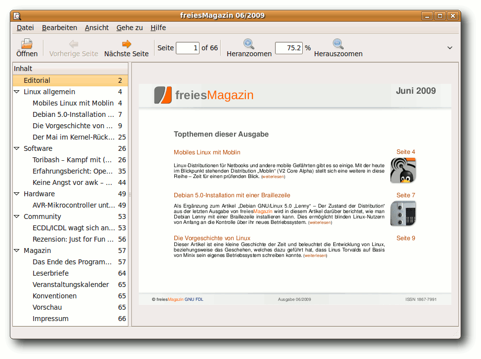

freiesMagazin August 2009 (ISSN 1867-7991)
Topthemen dieser Ausgabe
Audio und Video in Firefox 3.5 „Shiretoko“
Mit Firefox 3.5 „Shiretoko“ kam am 30. Juni 2009 ein populärer Browser auf den Markt, der HTML 5 für eine breite Masse an Internetnutzern zugänglich macht. Für Internetseitenbetreiber ist es möglich, Multimedia - d. h. Ton und Video - ohne Fremdanwendungen wie Flash, Java oder Silverlight in die Internetseite einzubauen, indem HTML 5 genutzt wird. Umgesetzt werden kann das mit neuen Tags, die in Zusammenarbeit mit dem freien Containerformat Ogg sogar nativ in Firefox 3.5 die Medien wiedergibt. Wie man diese neuen Elemente sinnvoll einsetzt, kontrolliert und personalisiert, soll in dem Artikel einführend erläutert werden. (weiterlesen)
PDF-Betrachter im Test
PDF-Betrachter gibt es fast wie Sand am Meer. Jede Desktopumgebung hat sein eigenes Modell, am bekanntesten sind sicherlich Evince unter GNOME und Okular unter KDE. Für diesen Artikel sollen aber auch andere, weniger bekannte PDF-Betrachter unter Linux getestet werden. Anhand verschiedener Anforderungen wird der alltägliche Einsatz überprüft. (weiterlesen)
VNUML - Ein Netzwerksimulator mit User-Mode-Linux
Virtual Network User-Mode-Linux (VNUML) ist ein Programm, um Netzwerke zu simulieren. Dabei werden die beteiligten Rechner nicht nur simuliert, sondern als virtuelle Maschinen gestartet, wodurch sie mit echten Protokollen miteinander kommunizieren. Daher eignet sich dieses Werkzeug sehr gut zum Testen und Lernen von Netzwerktechniken wie z. B. Routingprotokollen. (weiterlesen)
Zum Index
Inhalt
Linux allgemein
Kurze Vorstellung von Fedora 11
ZevenOS meets Debian Lenny
Der Juli im Kernel-Rückblick
Anleitungen
Audio und Video in Firefox 3.5 „Shiretoko“
Magische Tasten: SysRQs
Magazinerstellung mit LATEX - Das Layout
Software
PDF-Betrachter im Test
Auf Klick folgt Schnitt: PDF Chain
VNUML - Ein Netzwerksimulator
Panoramabilder erstellen mit hugin
NaturalDocs - Quelltexte natürlich dokumentieren
Community
Linuxtag - Erlebte Community
Magazin
Editorial
freiesMagazin sucht Unterstützung!
Veranstaltungen
Vorschau
Impressum
Zum Index
Editorial
Sommerzeit gleich Ferienzeit! Obige Gleichung kennt wohl jeder, wird sie in Deutschland derzeit exzessiv gelebt. In so gut wie allen Bundesländern haben die Sommerferien begonnen, Semesterferien sind auch und so tummeln sich Horden von jungen Menschen überall - nur nicht vor dem PC. Das wirkt sich auch etwas auf die monatliche Nachrichtenübersicht aus, sodass es kaum etwas Berichtenswertes gibt. Bei den Internetsperren (aka. Zugangserschwernisgesetz) gibt es nichts Neues, da das Gesetz ins Sommerloch gefallen ist (Link). Und auch Microsoft-Bashing ist auf die Dauer etwas öde, haben doch schon genug Menschen ihren Senf zur unfreiwilligen Code-Veröffentlichung des Microsoftschen Virtualisierungstreibers abgegeben (Link). Jedoch geht redaktionsintern das Gerücht um, dass in nächster Zukunft wieder ein technisch-sportliches Ereignis ansteht. Wir verweigern dazu aber ohne unsere Anwälte jede Aussage! Wir tummeln uns jedenfalls auch, verschieben das Ganze aber auf Oktober, denn da findet wieder einmal die Ubucon statt (Link). Letztes Jahr war unser Redakteur Dominik Wagenführ noch als Zuschauer passiv dabei (Link), für dieses Jahr überlegen wir eine aktivere Rolle zu übernehmen. Deshalb dachten wir uns, einen Abgesandten vor Ort zu schicken, der etwas über freiesMagazin, die Menschen hinter dem Projekt und den „leidvollen“ Weg eines Artikels vom Autor bis zur Ausgabe berichtet. Bevor wir uns aber die Arbeit machen, stundenweise Vorträge auszuarbeiten, wollen wir wissen, ob überhaupt Interesse an so einem Vortrag besteht. Und wenn ja, ob die Interessenten dann auch noch zufälligerweise auf der Ubucon dabei sind. Bei genügend positiven Rückmeldungen machen wir uns auf den Weg, um rechtzeitig am 16. Oktober in Göttingen einzukehren. Meinungen dazu können wie üblich anIhre freiesMagazin-Redaktion Links
- http://www.heise.de/newsticker/meldung/142760
- http://www.heise.de/open/artikel/142495
- http://www.ubucon.de/
- http://www.freiesmagazin.de/freiesMagazin-2008-11
Zum Index
Kurze Vorstellung der elften Fedora-Ausgabe
von Hans-Joachim Baader Fedora 11 (Link) ist am 9. Juni 2009 erschienen und wartet mit aktualisierten Desktops und einer Vielzahl von neuen Funktionen auf. Dieser Artikel versucht, mit Schwerpunkt auf den Neuerungen, einen Eindruck von der Distribution zu geben. Redaktioneller Hinweis: Der Artikel „Kurze Vorstellung der elften Fedora-Ausgabe“ erschien erstmals bei Pro-Linux (Link).Bootscreen der Live-CD.
Vorwort
Fedora 11 „Leonidas“ erschien am 9. Juni 2009, rund sechseinhalb Monate nach Fedora 10. Die Veröffentlichung wurde zweimal um eine Woche verschoben, um kurzfristig entdeckte Probleme zu beseitigen. Mit Fedora 12 soll die Verzögerung wieder eingeholt werden, um den Halbjahreszyklus mit neuen Versionen jeweils im Mai und November einzuhalten.Überblick über die Neuerungen
Fedora 11 bringt umfassend aktualisierte Software und zahlreiche Neuerungen mit. Alle Neuheiten und Aktualisierungen sind in den Release Notes mit Verweisen auf detailliertere Angaben festgehalten (Link). In diesem Artikel sollen von den Neuerungen so viele wie möglich genauer untersucht werden. Zu den wichtigsten Änderungen zählen die automatische Installation von Schriftarten und MIME-Typen durch eine verbesserte Version von PackageKit, der neue PulseAudio-Lautstärkeregler, welcher die Lautstärke mit einem globalen Bedienfeld regeln soll, das Ändern der Grafikmodi von Intel-, ATI- und NVidia-Karten im Kernel, die vollständige Integration von Fingerabdruck-Lesern, das Eingabesystem IBus für asiatische Sprachen und das Presto-Plugin für die Paketverwaltung, welches es ermöglichen soll, inkrementelle Paketupdates herunterzuladen und damit den Download-Umfang von Updates beträchtlich zu reduzieren. Ein Windows-Cross-Compiler für die unter Windows laufende mingw-Umgebung wurde hinzugefügt. Das ext4-Dateisystem wird als Standard-Dateisystem eingesetzt, das btrfs-Dateisystem ist in einer experimentellen Version vorhanden. Das Nachladen von proprietärer Firmware wird über PackageKit ermöglicht. Beim X-Server wurde die Tastenkombination Strg + Alt + Backspace standardmäßig deaktiviert, was bedeutet, dass man den Server nicht mehr aus Versehen, aber auch nicht mehr gezielt, per Tastendruck beenden kann. Das versehentliche Abschießen des X-Servers war für viele Benutzer ein Problem, beispielsweise wenn sie eine ähnliche Tastenkombination verwenden wollten, aber die falsche erwischten, oder mit Feststelltasten arbeiten. Gastsysteme in virtuellen Maschinen sind nun komfortabler nutzbar und die virtuelle Konsole des Gastsystems ist nicht mehr auf 800x600 Pixel beschränkt. Die Zeit zum Hochfahren wurde deutlich verkürzt. Sie soll auf vielen Rechnern nur noch bei 20 Sekunden liegen. Das System beruht auf dem Linux-Kernel 2.6.29.4. Einige der aktualisierten Bestandteile von Fedora 11 sind GNOME 2.26, KDE 4.2.2, Xfce 4.6, OpenOffice.org 3.1, Firefox 3.5 Beta 4, Samba 3.3.2, Python 2.6 und git 1.6.2.2.Installation
Fedora kann auf verschiedene Arten installiert werden. Von einem Live-System aus, das als CD verfügbar ist, ist eine der Möglichkeiten. Ein direktes Starten eines Installationssystems ist mit einer DVD oder dem äquivalenten Satz von CDs möglich. Auch eine Installation von einem minimalen Image boot.iso, das den Großteil der benötigten Pakete von einem Server herunterlädt, ist möglich. Zudem kann man mit einem einzelnen Kommando (livecd-iso-to-disk unter Linux, liveusb-creator unter Windows) einen bootfähigen USB-Stick mit Fedora erzeugen. Dies ist in der Installationsanleitung beschrieben (Link). Die Installation ist so einfach, dass sie von allen Anwendern meist ohne Probleme bewältigt werden kann, und das ist ja nach wie vor wichtig, solange nur wenige Rechner mit vorinstalliertem Linux ausgeliefert werden.Varianten
Von Fedora 11 stehen DVDs für die Architekturen x86, x86_64 und PPC sowie Live-CDs mit GNOME und KDE für x86 und x86_64 zur Verfügung. Vom Desktop der Live-CDs aus kann die grafische Installation gestartet werden. Dabei ist der Umfang der installierten Software auf den Inhalt der CD beschränkt. Mehr Software (oder andere Desktops als KDE und GNOME) kann man von der DVD oder alternativ vom CD-Satz installieren. Die DVD bietet auch ein Rettungssystem sowie eine Textmodus-Installation. Wer die Installation im Textmodus wählt, muss sich nun durch weniger Bildschirme hindurchhangeln. Dadurch wird die Installation jedoch deutlich unflexibler. Fedora empfiehlt daher, wenn möglich, die grafische Installation zu verwenden. Ist das nicht möglich, sollte man die grafische Installation per VNC von einem anderen Rechner aus steuern oder die automatische Installation mit Kickstart wählen. Wenn nur der Textmodus bleibt, kann man nur ein System mit einer festen Auswahl von Basispaketen und einer Standard-Partitionierung aufsetzen. Die grafische Installation benötigt 192 MB RAM, die textbasierte kommt mit 64 MB aus.Installer
Die Installation von der Live-CD beginnt mit der Auswahl der Tastatur, die auch die Sprache festlegt. In Fedora 10 waren Sprach- und Tastaturauswahl noch getrennt. Nach dieser Eingabe versucht das Installationsprogramm, die vorhandenen Festplatten zu erkennen. Ist eine Festplatte nicht initialisiert (etwa weil sie ganz neu ist oder komplett überschrieben wurde), dann erscheint eine Warnung, und das Gerät kann neu initialisiert (also mit einer Partitionstabelle versehen) werden. Danach kann man einen Rechnernamen vergeben. Eine Konfiguration des Netzwerks erfolgt anschließend, aber nur, wenn sie benötigt wird. Die Einstellungen werden in das installierte System übernommen. Andernfalls setzt das System auf den Network Manager und richtet jede gefundene Netzwerkschnittstelle erst einmal so ein, dass DHCP verwendet wird. Nach der Installation kann man das bei Bedarf ändern. Auf dem folgenden Bildschirm kann man die Zeitzone auswählen, danach folgt die Eingabe des Root-Passworts. Ein zu schwaches Passwort wird nun zurückgewiesen. Das ist für manche Anwendungen, wo man es nicht benötigt, etwas lästig, aber insgesamt zur Verbesserung der Systemsicherheit angebracht. Es folgt die Partitionierung, die auf Wunsch mit einem einzigen Klick (auf „Weiter“) erledigt werden kann. Für einfache Zwecke kann die vorgegebene Partitionierung durchaus ausreichend sein. Allen anderen wird empfohlen, sich hierfür Zeit zu nehmen und alle Details der Partitionen festzulegen. Dadurch wird die Partitionierung zum aufwendigsten Teil der Installation, doch die Zeit ist sinnvoll angelegt. Die Option, die ganze Festplatte zu verschlüsseln, ist zumindest dann sinnvoll, wenn es sich um ein mobiles System handelt. Außerdem steht die Möglichkeit zur Verfügung, mit eCryptfs einzelne Verzeichnisse zu verschlüsseln. RAID und LVM stehen ebenfalls als Optionen bereit. Die automatische Partitionierung verwendet standardmäßig LVM. Die Release Notes von Fedora geben gute Hinweise zur Partitionierung allgemein und zu LVM. Eine wichtige Neuerung ist hier natürlich die Option, das Dateisystem ext4 zu wählen. btrfs ist als Option im Kernel vorhanden, jedoch bei der Installation nicht wählbar. Es ist noch experimentell und wird daher ausdrücklich nicht empfohlen. ext4 dagegen ist die Standardeinstellung für neu angelegte Dateisysteme. Da der Bootloader GRUB in der Fedora-Version ext4 nicht unterstützt, muss jedoch zumindest eine Partition, meist /boot, mit einem von GRUB unterstützten Dateisystem formatiert werden. Die Möglichkeit, die zu installierende Software festzulegen, existiert auf der Live-CD nicht, ebenso wenig wie die Konfiguration des Bootloaders. Diese Optionen sind nur auf der DVD zu finden. Im nächsten Schritt beginnt daher die Installation, bei der das Live-Abbild in hohem Tempo auf die Festplatte übertragen wird. Nach nur fünf Minuten ist die Installation beendet. In der KDE-Variante der Live-CD hatte die Auswahl der Tastatur keine Sprachumschaltung zur Folge. Die Sprache blieb Englisch. Außerdem trat ein SELinux-Fehler auf, der sich auf die Datei .xsession-errors im Home-Verzeichnis des Live-CD-Users bezog. Auswirkungen hatte das nicht, da SELinux auf der Live-CD im Permissive-Modus läuft, also die Zugriffsrechte nur prüft.Setup
Beim ersten Systemstart nach der Installation wird noch eine Setup-Routine namens Firstboot durchlaufen. Diese zeigt zunächst Lizenzinformationen an, erfordert aber kein Akzeptieren von Lizenzen.Hinweis auf die Lizenzen.
Nun muss man einen Benutzer definieren, wobei man auch ein Netzwerk-Login (LDAP, NIS, Kerberos etc.) festlegen kann. Da die Display-Manager (gdm, kdm usw.) es unter Fedora nicht mehr erlauben, sich als Root an der grafischen Oberfläche anzumelden, ist dieser Schritt zwingend. Danach kann man nochmals Datum und Uhrzeit prüfen oder ändern und auch die Verwendung von NTP festlegen. Abschließend fragt Firstboot, ob es die Hardware-Daten anonymisiert an das Fedora-Projekt zurückmelden darf. Hinter dieser Option verbirgt sich das Programm Smolt (Link). Danach ist das System endgültig einsatzbereit.
Benutzung
Systemstart
Fedora 11 kann deutlich schneller hochfahren als Fedora 10, das ja bereits gegenüber früheren Versionen beschleunigt wurde. Auf manchen Rechnern soll die Startzeit bis zum Login-Bildschirm auf 20 Sekunden sinken. Auf dem Testrechner wurden in etwa 35 Sekunden gemessen. An diesem Punkt wird jedenfalls weiter gearbeitet, so dass man in einem halben Jahr vielleicht schon Zeiten von 10 Sekunden sehen kann. Möglich wurde die Beschleunigung durch mehrere Maßnahmen, so wurde der Daemon setroubleshootd entfernt. Da Fedora den Kernel 2.6.29 verwendet, konnte es noch nicht von den Verbesserungen in 2.6.30 profitieren, die das Hochfahren weiter beschleunigen. Der Readahead-Dienst wurde verbessert und legt nun nach jeder Änderung der Paketdatenbank ein neues Profil an. Readahead selbst ist nichts Neues, wie zumindest die Fedora-Spezialisten wissen. Es liest Dateien, die das System zum Starten braucht, schon vorab ein, während das System nicht anderweitig auf die Festplatte zugreift. Dadurch liegen sie bereits im Cache, wenn sie benötigt werden.GNOME
GNOME in der Version 2.26.1 installiert, zumindest über die Live-CD, nicht OpenOffice.org, sondern Abiword, aber keine weiteren Büroprogramme. Als Browser ist Firefox 3.5 Beta 4 installiert. Wie schon in Fedora 10 mit GNOME 2.24.1 läuft gnome-screensaver unnötigerweise auch dann, wenn es gar nicht benötigt wird, weil der Screensaver abgeschaltet wurde. Die Paketverwaltung erfolgt über PackageKit, daneben steht yum auf der Kommandozeile zur Verfügung. Wer statt yum lieber APT verwenden will, kann das nachinstallieren. PackageKit ist mittlerweile gereift und liefert anders als in Fedora 10, als es anfänglich noch katastrophale Fehler aufwies, keinen Grund zur Beanstandung mehr. Die Bedienung der grafischen Oberfläche der Paketverwaltung ist intuitiv und übersichtlich. Ein kleines Problem war, dass im 64-Bit-System sowohl i586- als auch amd64-Pakete angezeigt werden. Es mag sein, dass man die i586-Pakete zur Ausführung von 32-Bit-Programmen benötigt und sie deshalb installierbar sein müssen. Es wäre aber praktisch, in der GUI einen Filter für die Architektur zu haben. Ansonsten werden es die GNOME-Benutzer begrüßen, dass GNOME in der neuen Version wiederum keine größeren Änderungen aufweist. Das Panel lässt sich nun nicht mehr so leicht wie früher verschieben, indem man es mit der Maus an eine andere Bildschirmseite zieht. Man muss zusätzlich Alt gedrückt halten. So soll versehentliches Verschieben verhindert werden, außerdem vereinheitlicht es die Bedienung. Bluetooth wird nun über gnome-bluetooth verwaltet, das bluez-gnome ersetzt und mehr Möglichkeiten bietet. Audio über Bluetooth läuft möglicherweise noch nicht stabil, ist aber als Technologie-Vorschau mit dabei.GNOME-Desktop mit Dateimanager Nautilus.
KDE
KDE wird in Version 4.2.2 mitgeliefert. Auch bei KDE wird in der Live-CD-Variante kein OpenOffice.org installiert, dafür das vollständige KOffice 1.6.3. Der noch aus KDE3 stammende knetworkmanager soll durch das Plasmoid kde-plasma-networkmanagement ersetzt werden, das jedoch noch nicht als produktiv einsetzbar empfunden wurde. Daher ist es nur im Archiv vorhanden und kann bei Interesse nachinstalliert werden. Vorläufig nutzt KDE noch das nm-applet von NetworkManager-gnome, wodurch auch die Passwortverwaltung für WLAN-Zugänge usw. über ein GNOME-Programm läuft. Die bekanntesten KDE-3-Programme wurden mittlerweile auf KDE4 portiert. Daher ist in der Standardinstallation außer KOffice kein KDE3-Programm mehr vorhanden. Die nun auch an KDE4 angepasste Verwaltung von privaten Daten (KDEPIM) verwendet die Bibliothek Akonadi, die wiederum auf einen MySQL-Server zur Speicherung der Daten angewiesen ist. Die Konfiguration des MySQL-Servers geschieht jedoch vollständig automatisch, so dass der Benutzer nichts davon wissen muss. Pro Benutzer wird eine eigene MySQL-Instanz gestartet. Die Energieverwaltung geschieht jetzt mit PowerDevil, und es ist ein Frontend für PolicyKit vorhanden. Beide sind in den „Systemeinstellungen » Erweitert“ zu finden. Offenbar benötigt man spezielle Kenntnisse, um PolicyKit bedienen zu können. Intuitiver, und momentan wohl auch nützlicher, ist PowerDevil. Die Paketverwaltung obliegt nun ganz kpackagekit, und das gnome-packagekit wird nicht mehr benötigt. kpackagekit zeigt bisweilen die Paketgrößen nicht richtig an, was im Bugtracking-System allerdings schon verzeichnet ist. Ein anderes Problem gibt es, wenn man Pakete zu deinstallieren versucht, von denen andere Pakete abhängen. In diesem Fall kann das Paket nicht entfernt werden und kpackagekit bringt eine Fehlermeldung. Es sagt aber nicht, welche anderen Pakete die Deinstallation verhinderten. Diese Information wäre nützlich, weil man diese Pakete auch deinstallieren könnte, wenn man sie nicht benötigt.KDE-Desktop mit Dateimanager Dolphin.
Multimedia
Die vereinfachte Lautstärkenregelung ist eine der größten Änderungen in Fedora 11 im Multimedia-Bereich. Es ist ein Programm, das nur auf PulseAudio einwirkt und es für Benutzer viel einfacher machen soll, den richtigen Kanal zu regeln. Das Programm hat derzeit noch Mängel, die wohl auch mit der schwierigen Erkennung der genutzten Audio-Ausgänge zusammenhängen. Auch hat das Programm keinen Einfluss auf die Einstellungen von ALSA. Wenn die Ausgabe in ALSA zu leise ist, ist es machtlos. Daher ist die bisherige Laustärkenregelung weiterhin als „Advanced Volume Control“ verfügbar, die aber den Nachteil hat, alle Regler der Soundkarte darzustellen, was bei komplexerer Hardware unübersichtlich wird. KDE bringt seine eigene Lautstärkenregelung mit KMix mit, mit den gleichen Nachteilen wie die GNOME/Gstreamer-Lautstärkenregelung. Daneben gibt es im Kontrollzentrum unter „Multimedia“ die Möglichkeit, die Prioritäten und Anderes zu regeln. Dies mag komplex erscheinen, ermöglicht aber eine feine Kontrolle für alle Bedürfnisse. Aus den bekannten Gründen kann Fedora, ebenso wie die meisten anderen Distributionen, nur wenige Medienformate abspielen, da es viele benötigte Codecs nicht mitliefern kann. Wenn man versucht, ein Video abzuspielen, dann erhält man mit dem KDE-Videoplayer „DragonPlayer“ nicht einmal eine Meldung, dass etwas nicht geht. Kaffeine meldet immerhin, dass es das Format nicht kennt. Nur Totem bietet auch die Option an, über die Paketverwaltung nach passenden Plugins zu suchen. Dazu muss man aber vorher in der Paketverwaltung die zusätzlichen Repositorys eintragen. Wenn man weiß, wie es geht, ist es im Prinzip ganz einfach. Über die Webseite von RPM Fusion (Link) kann man Pakete installieren, die die Repositorys hinzufügen. Danach lassen sich die fehlenden Pakete finden und auch installieren. Unter GNOME funktionierte diese Methode einwandfrei. Zwar erschien nach jeder Installation in Totem eine Meldung, dass noch ein Codec fehle, aber wenn man Totem neu startete, war das Video abspielbar. Ein kompletter Fehlschlag war dagegen unter KDE zu verzeichnen. Zunächst wurde beim Versuch, ein nicht unterstütztes Video-Format abzuspielen, vom Paketmanager nichts Passendes gefunden. Nach der manuellen Installation der gleichen GStreamer-Module wie bei GNOME konnten MP3- und einzelne Videodateien abgespielt werden, aber nicht alle. Bei manchen stürzte DragonPlayer einfach ab. Daraufhin wurde Xine nachinstalliert, was ja von Phonon, der Multimedia-Schicht von KDE 4, als Backend genutzt werden kann. Doch Xine stürzte im ersten Versuch bei jedem einzelnen Video ab. Als Ursache wurde eine inkorrekte Videotreiber-Einstellungen vermutet (anders gesagt, die Standardeinstellung funktionierte hier nicht), und so war es. Mit den richtigen Optionen für Video und Audio funktionierte Xine einwandfrei. Flash-Videos ließen sich unter GNOME nach der Installation von Gnash problemlos in Firefox abspielen. Unter KDE mit Konqueror war das Gnash-Plugin unbrauchbar.Weitere Neuerungen
Da der Hash-Algorithmus SHA-1 zunehmend unsicher wird (der Aufwand, um eine Hash-Kollision zu berechnen, konnte jüngst weiter gesenkt werden, ist aber immer noch sehr hoch), geht Fedora 11 dazu über, SHA-2 zu verwenden, speziell SHA-256 mit 256 Bit Hash-Länge (MD5 hat 128, SHA-1 160 Bit). Bei der Virtualisierung hat es eine Reihe von Verbesserungen gegeben. VNC-Verbindungen zu virtuellen Maschinen (VMs), die mit KVM oder Qemu laufen, können nun über SASL authentifiziert werden. Dadurch werden alle Methoden der Authentifizierung möglich, die SASL unterstützt, einschließlich sicherem Single-Sign-On in Kerberos-Umgebungen. Die grafische Konsole von VMs kann nun in höheren Auflösungen als 800x600 laufen und verfügt über eine bessere Kontrolle des Mauszeigers. VMs unter KVMs können nun exklusiven Zugriff auf ein PCI-Gerät bekommen. Die Pakete kvm und qemu wurden vereinigt. Qemu kann damit als VM sowohl eigenständig als auch hardwarebeschleunigt mit KVM laufen. Eine weitere interessante Entwicklung ist die Integration von SELinux in die Virtualisierung. Dadurch wird es möglich, die Rechte von VMs noch detaillierter zu kontrollieren. Außerdem haben die Entwickler die Möglichkeit geschaffen, Images von VMs von außerhalb der VM zu inspizieren und zu ändern. Dazu gibt es die Bibliothek libguestfs und zugehörige Tools wie guestfish (eine interaktive Shell) und virt-inspector. Fedora kommt selbstredend ohne proprietäre Grafiktreiber von NVidia, ATI oder anderen Herstellern. Dass die freien Treiber Nouveau und Radeon diese noch nicht vollständig ersetzen können, ist auch bekannt. Bei den meisten Grafikchips sollten sie zumindest zweidimensionale Grafik darstellen können, in einigen wenigen Fällen muss man vielleicht bei der Installation auf den VESA-Treiber ausweichen oder das Kernel Mode Setting deaktivieren. Gegebenenfalls kann man später einen proprietären Treiber nachinstallieren, wenn die Leistung des freien nicht ausreicht. Der Paketumfang der Distribution ist auf 18.000 Pakete gewachsen, davon stammen nur noch 550 von RPMFusion. Vor einem halben Jahr waren es nur 12.000 Pakete, wovon rund 2.000 von RPMFusion kamen.Fazit
Die Änderungen und Verbesserungen in Fedora 11 sind so umfangreich, dass selbst die offiziellen Release Notes kein komplettes Bild geben können. In diesem Bericht wurde sich notgedrungen auf die auffälligsten Änderungen konzentriert. Fedora hat nach eigenen Angaben das Ziel, die neuesten Entwicklungen aus der Open-Source-Welt schnell zu den Anwendern zu bringen. Dieses Ziel wurde wieder einmal erreicht. Der Preis für die große Aktualität ist jedoch, dass eine Vielzahl von Features unfertig ausgeliefert wird. Spätestens wenn irgend etwas nicht wie erwartet funktioniert, muss man wohl oder übel die Release Notes lesen oder sich anderweitig informieren. Während selbst Debian Sid in aller Regel nur stabile Softwareversionen enthält, liefert Fedora 11 einige Programme in Betaversionen mit, beispielsweise den X-Server oder Firefox. Ob dies nötig wäre, ist die Frage. Andererseits können Fehler in jeder Software, auch in „stabilen“ Versionen auftreten. Wichtig ist letztlich, dass die Fehler korrigiert werden. Auch wenn in Fedora 11 einige Baustellen zu beobachten sind, sind viele Komponenten gegenüber Fedora 10 verbessert und gereift, so dass größere Probleme während des Tests ausblieben. Größter Schwachpunkt ist derzeit wohl die schlechte Multimedia-Funktionalität und andere kleinere Probleme in KDE. Man kann aber damit rechnen, dass KDE 4.3 diese weitgehend beseitigen wird. Es bleibt bei der Einschätzung (Link), dass Heimanwender, denen die neueste Version eines Programms ziemlich gleichgültig ist, von Fedora Abstand halten sollten. Sie sind mit einem zuverlässigeren System wie Debian besser bedient. Benutzer, die die gelegentlich auftretenden Probleme selbst lösen können, könnten von der Aktualität und den zahlreichen Innovationen angetan sein. Auch als Desktopsystem in Firmen und Organisationen ist Fedora 11 durchaus geeignet, allerdings nur, wenn die Wartung von erfahrenen Administratoren übernommen wird. Links- http://fedoraproject.org/
- http://www.pro-linux.de/berichte/fedora11.html
- http://docs.fedoraproject.org/release-notes/f11/
- http://docs.fedoraproject.org/install-guide/f11/
- http://smolts.org/
- http://rpmfusion.org/
- http://www.pro-linux.de/berichte/fedora10.html
- http://fedoraproject.org/wiki/Fedora\_11\_tour
- http://fedoraunity.org/
- http://www.fedoraforum.de/
| Autoreninformation |
| Hans-Joachim Baader befasst sich seit 1993 mit Linux. 1994 schloss er sein Informatikstudium erfolgreich ab und machte die Softwareentwicklung zum Beruf. Seit 1995 arbeitet er freiberuflich. Daneben ist er einer der Betreiber von Pro-Linux.de. |
Zum Index
ZevenOS meets Debian Lenny
von Carsten Rohmann Im Artikel „ZevenOS goes BeOS“ aus freiesMagazin 07/2009 (Link) hatte sich das ZevenOS-Projekt klar gegen Debian stable und für Xubuntu als zukünftige Basis ausgesprochen. Das entsprach dem damaligen Sachstand, als das Interview mit dem Projektleiter Leszek Lesner geführt wurde. In der Zwischenzeit gab es jedoch interessante und erfreuliche Weiterentwicklungen. Aus aktuellem Anlass wurde daher dieser Nachtragsartikel geschrieben.Neue Kreuzungsexperimente
Ende Februar 2009 tauchte im ZevenOS-Forum eine Linux-Projekt-Idee namens „Neptune“ auf, initiiert von Leszek Lesner und Nutzern der ZevenOS-Community. „Neptune“ war vom Ansatz her zunächst als ein eigenständiges Projekt entworfen worden - ohne Bezug zu ZevenOS. Es bestand aus einer installierbaren Live-CD mit GNOME und LXDE, als Basis diente das stabile Debian 5.0 (Lenny). Aber Neptune wurde, u. a. wegen Problemen mit der Unterstützung brandneuer Hardware, bald wieder fallen gelassen. Teile der ZevenOS-Community hatten jedoch lebhafte Sympathie für die Projektidee entwickelt. Sie blieben beharrlich und recht bald kam der konkrete Wunsch nach einer Verbindung eines stabilen und schnellen Debian Linux mit ZevenOS auf. Das Konzept „Neptune“ wurde unter neuer Perspektive wieder aufgegriffen und man experimentierte mit diversen Kerneln. Aus Spaß wurde Ernst und viel Arbeit hinter den Kulissen. Das Experiment mündete schließlich erfolgreich in einer interessanten „Kreuzung“ von ZevenOS mit Debian Lenny. ZevenOS-Neptune erblickte als zusätzliches Projekt das Licht der Welt, vorläufig allerdings erst als inoffizielle Testversion (Link).Bootoptionen der Live-CD.
Die Veröffentlichung von ZevenOS „Projekt Neptune 1.0“
Die neue ZevenOS-Version auf der Basis von Debian Lenny für x86 wurde am 11. Juli 2009 als ZevenOS „Projekt Neptune 1.0“ veröffentlicht. Es handelt sich dabei um ein aktualisiertes ZevenOS 1.1 auf Basis des stabilen, aktuellen Debian 5.0 (Lenny) mit einem modifizierten Kernel. Es sieht aus wie ZevenOS, es ist ZevenOS - aber das Ganze noch stabiler und schneller. Den Verlautbarungen nach sollen sowohl ZevenOS auf der Basis von Xubuntu als auch ZevenOS auf der Basis von Debian stable zunächst parallel bestehen. ZevenOS 2.0 werde in jedem Fall auf Basis des kommenden Xubuntu 9.10 (Karmic Koala) fertiggestellt. Die im Rahmen des Projekts Neptune gemachten Erfahrungen und Verbesserungen sollen in die Weiterentwicklung von ZevenOS 2.0 einfließen.Unterschiede zu Debian Lenny und Xubuntu
ZevenOS-Neptune enthält im Gegensatz zu Debian Lenny (Link) einen modernisierten Kernel. Dieser trägt die Versions-Nummer 2.6.30-generic und ist ein aktuelles Produkt aus der Kernel-Entwicklung des Linux-Projekts „Kanotix“ (Link). Der verwendete Kernel bietet eine noch bessere Unterstützung moderner Hardware als der originale Lenny-Kernel. Im Vergleich zur Variante von ZevenOS auf Basis von Xubuntu verspricht das neugebackene ZevenOS Neptune eine schnellere Responsivität des Systems auf Low-End-Rechnern und Netbooks. Die Software aus den Quellen von Debian Lenny wurde um Sicherheitsaktualisierungen erweitert. Damit soll langfristig ein stabiles und sicheres System gewährleistet werden.Video-Präsentation
Eine ansprechend gemachte Video-Einführung zu Neptune wird vom Projekt bei YouTube zur Verfügung gestellt. Es wurde in zwei Teile aufgeteilt (Link) (Link).Der Sinn dieses Experiments?
Gründe für die „Kreuzung“ gibt es anscheinend mehr als genug. Einer der offensichtlichen aber dürfte sein: Teile der Community wollten es einfach so ;). Und ja - sie haben tatkräftig bei der Realisierung des Projektes mitgeholfen. ZevenOS „Projekt Neptune“ ist überwiegend ein Projekt der Community, wie sich auf der Nachrichtenseite von ZevenOS nachlesen lässt.ZevenOS Standard-Desktop.
Eine Mischung aus Fakten ...
Darüber hinaus bestand die offene Fragestellung, wie man ZevenOS denn schneller machen könne. Das aktuelle Xubuntu zeigte sich in Tests gegenüber dem konservativeren Debian Lenny mit Xfce-Desktop signifikant langsamer (siehe Fazit des o. g. Beitrags aus freiesMagazin 07/2009 (Link)). Angesichts weiterer ungelöster Probleme mit Xubuntu 9.04 (Jaunty Jackalope) - eines der wichtigsten ist der fehlerhafte Intel-Treiber im Zusammenspiel mit X.org - lag der Gedanke nahe, ZevenOS versuchsweise mit einem alternativen Unterbau zu versehen. Erst Ubuntu 9.10 (Karmic Koala) wird Abhilfe bei dem Intel-Treiberproblem schaffen können. Das zeigt die aktuelle, inoffizielle Testversion ZevenOS 1.92 auf Basis von Karmic Alpha 2. ZevenOS 2.0 werde ganz sicher auf Xubuntu 9.10 (Karmic) basieren, so die offizielle Erklärung des Projektleiters Leszek Lesner. Und die ZevenOS-Variante auf Basis von Xubuntu solle definitiv die Hauptversion bleiben.... und Mutmaßungen
Vermutlich ist die Veröffentlichung des Projekts ein Zugeständnis an die Community und zugleich ein Versuchsballon. Falls Neptune ausreichend Zuspruch findet und von einer aktiven Community getragen wird, eröffnet sich dadurch eine interessante Option. Sollten die Probleme mit Xubuntu andauern, könnte die Entwicklung von ZevenOS alternativ auf der Basis eines stabilen Debian fortgesetzt werden. All das sind jedoch Spekulationen, keine Fakten.Jetzt ist Diplomatie angesagt
Das Projekt ZevenOS hielt sich zum Thema „Richtungsentscheidungen“ bisher relativ bedeckt und gab zunächst diplomatisch ein doppeltes Bekenntnis ab: eines für ZevenOS auf Basis von Xubuntu als die ZevenOS-Hauptversion und zugleich eines für ZevenOS auf Basis von Debian stable. Offenbar will man weiterhin auf die Ubuntu-Fangemeinde setzen und zugleich aber Freunde für die stabile Debian-Variante hinzugewinnen.ZevenOS-Versionen in Zahlen
Fakt ist, dass es derzeit drei aktuelle Versionen von ZevenOS gibt: ZevenOS 1.1 auf der Basis von Xubuntu 8.10 (Intrepid), das neue aktualisierte ZevenOS 1.1 auf der Basis des stabilen Debian 5.0 (Lenny). Und die Entwicklungs-Version ZevenOS 1.9 auf der Basis des aktuellen Xubuntu 9.04 (Jaunty), aus dem zur gegebenen Zeit dann ZevenOS Version 2.0 auf Basis des kommenden Xubuntu 9.10 (Karmic) entstehen soll.ZevenOS-Neptune-Spezifikationen
ZevenOS „Projekt Neptune“ bringt folgende Spezifika mit:- Typ: installierbare Live-CD
- Kernel: 2.6.30-generic (von Kanotix)
- X.org X-Server: 7.3
- Desktopumgebung: Xfce 4.4.2
- Sprachunterstützung: Deutsch
Weitere Informationen
- Der Live-CD-Installer als Eigenentwicklung der Community. In wenigen Schritten soll das System vollständig installiert und eingerichtet werden können. Das Installationsprogramm ist schlank, schnell und kann optional als Kommandozeilenprogramm aufgerufen werden. Damit kann ZevenOS „Projekt Neptune“ auch auf älteren Rechnern installiert werden.
- Automatische Installation proprietärer Grafiktreiber von nVidia und ATI/AMD durch optionale Skripte.
- Verbesserte Erkennung von Multimedia-Tasten.
- Für den Multimediabereich sind z. B. die Programme VLC, Devede, Avidemux, Audacity, Audacious und Brasero vorhanden. Zudem natürlich auch die ZevenOS-eigenen Tools. Auf zwei davon wird weiter unten gesondert hingewiesen.
- Zwei neue Themes (Blue und Dust), anwählbar durch einen Theme-Manager. Der Theme-Manager erlaubt somit die problemlose Gestaltung eines individuellen Desktops.
- OpenOffice.org kommt in der stabilen und älteren (Lenny-) Version 2.4.1.
- Ein Manager zum automatischen Herunterladen von Paketen, die für die Ausführung von Windows-Programmen notwendig sind. Mit wenigen Mausklicks kann so ein Windows-Programm wie Photoshop installiert und konfiguriert werden.
- Die schnelle Geany-IDE ist zur Freude vieler Entwickler mit an Bord.
Personalisierter Desktop im Dust-Theme mit den Programmen YAVDT und Encode.
- Encode (Link), ein vielseitiges Programm zum Konvertieren von Videos und Erstellen von Video-CDs.
- YAVDT (Link) (Yet Another Video Tube Downloader), ein Tool zum Herunterladen, Konvertieren und Abspielen von Flash-Videos. Damit können zusätzlich auch MP4-HQ-Videos heruntergeladen und auch Audiospuren von Musik-Videos als MP3 abgespeichert werden.
Download
Ein Herunterladen von ZevenOS „Projekt Neptune 1.0“ ist derzeit über einen Torrent-Server (Link) und einen Zugang über Wuala (Link) möglich. Allerdings möchte das Projekt gerne das Download-Angebot erweitern und ist auf der Suche nach weiteren Servern.Erfahrungen mit VirtualBox und qemu
Nur kurz soll hier das Thema Virtualisierung mit VirtualBox und qemu erwähnt werden. Die Live-CD ZevenOS Neptune ließ sich unter OpenSolaris 2009.06 und PC-BSD 7.1.1 mittels VirtualBox starten. Unter PC-BSD 7.1.1 ließ sich die Live-CD mittels qemu allerdings nicht zur Mitarbeit bewegen. Unter Pardus Linux 2009 ließ sie sich per qemu nach Deaktivierung von kqemu zwar starten, jedoch dauerte das Laden des Desktop ca. 15 Minuten; vollständig konnte dieser jedoch nicht angezeigt werden. Die Gründe sind leider unklar und wahrscheinlich auch nicht repräsentativ. Da ZevenOS Neptune als (installierbare) Live-CD zur Verfügung gestellt wird und somit vielen Anwendern ein gefahrloser Erstkontakt möglich ist, dürfte ein eventuelles Nicht-Funktionieren unter qemu leicht zu verschmerzen sein. Weitere Virtualisierungstechniken wurden nicht getestet.Zukunft? - Rosige Aussichten!
Es wird vor allem auf die Resonanz der Anwender ankommen. Wenn ZevenOS „Projekt Neptune“ gut angenommen und unterstützt wird, ist die Debian-Welt um eine stabile, benutzerfreundliche „BeOS-ähnliche“ Variante reicher, die zudem nativ deutschsprachig ist. Betrachtet man dazu die zahlreichen Zugriffe auf die Neptune-Threads im ZevonOS-Forum, kommt man nicht umhin, festzustellen, dass das Interesse an dieser neuen Distribution hoch ist. Mit Blick auf Zukünftiges bleibt also zu sagen, dass das Projekt Neptune nun für weiteres Wachsen und Gedeihen noch einige zusätzliche aktive Anwender, Designer, Programmierer und Dokumentatoren braucht - dies als Hinweis an all diejenigen, denen die Entwicklung dieser Distribution interessant und spannend erscheint.Neues Fazit
Das Projekt Neptune ist aus meiner persönlichen Sicht eine sinnvolle und vielversprechende Alternative von ZevenOS. Ich hoffe, dass die Option eines ZevenOS auf Basis des stabilen Debian Lenny an Fahrt gewinnt. Wem Ubuntu nicht besonders liegt oder wer Sympathien für Debian stable hegt - und zudem auf der Suche nach einem sehr anwenderfreundlichen Projekt ist –- der sollte sich das neue ZevenOS „Projekt Neptune“ genauer ansehen. Die Fans des guten alten BeOS sowieso ;). Das Fazit des vorhergegangenen Artikels aus freiesMagazin 07/2009 darf ich daher getrost in einem von zwei Punkten revidieren: ZevenOS „Projekt Neptune 1.0“ fühlt sich deutlich schneller an als die Version 1.1 auf der Basis von Xubuntu. Bliebe nur noch der Aspekt der Barrierefreiheit/Accessibility offen. Es wäre sehr zu begrüßen, wenn ZevenOS auch daran irgendwann arbeiten könnte. Auf meiner Festplatte habe ich ZevenOS 1.1 durch das neue, schnelle ZevenOS „Projekt Neptune 1.0“ ersetzt. So kommt nicht nur ein wenig nostalgisches „BeOS-Feeling“ auf meinen Rechner, sondern auch noch etwas von Kanotix. das ich damals in der Version „Thorhammer“ RC7 als benutzerfreundliches Debian stable kennen- und schätzengelernt habe. Links- http://freiesmagazin.de/freiesMagazin-2009-07
- http://www.zevenos.com/forum/forumdisplay.php?fid=21
- http://www.debian.org/releases/stable/
- http://www.kanotix.com/
- http://www.youtube.com/watch?v=VNKadEjGH5A
- http://www.youtube.com/watch?v=xKNMEKP_Ih8
- http://www.zevenos.com/de/about/encode
- http://www.zevenos.com/de/about/yavtd
- http://www.zevenos.com/de/allgemein/zevenos-project-neptune.html
- http://www.zevenos.com/wp-content/uploads/2009/07/zevenos-neptune-10iso.torrent
- http://www.wuala.com/ZevenOS/zevenos-neptune-1.0.iso/?lang=de
| Autoreninformation |
| Carsten Rohmann ist 2001 komplett auf Linux umgestiegen. Ihn interessieren auch Alternativen aus dem Bereich *BSD, OpenSolaris und Projekte, die versuchen, das gute alte BeOS wiederzubeleben. Als freiwilliger Mitarbeiter in Open-Source-Projekten beteiligt er sich an Übersetzungen und Dokumentationen. |
Zum Index
Der Juli im Kernel-Rückblick
von Mathias Menzer Basis aller Distributionen ist der Linux-Kernel, der fortwährend weiterentwickelt wird. Welche Geräte in einem halben Jahr unterstützt werden und welche Funktionen neu hinzukommen, erfährt man, wenn man den aktuellen Entwickler-Kernel im Auge behält. Hatte Torvalds das Merge Window mit dem 2.6.31-rc1 noch im Juni geschlossen (siehe „Der Juni im Kernel-Rückblick“, freiesMagazin 07/2009 (Link)), so kamen trotzdem noch einige wichtige Patches hinzu, die in erster Linie die MIPS- und PowerPC-Architekturen betreffen. Korrekturen an Intels i915-Grafiktreiber und Aufräumarbeiten des Codes für PAE (Physical Address Extension) (Link) sorgten für Probleme beim Kompilieren des Kernels auf i386-Systemen, davon war auch der Build-Service für Ubuntus Mainline-Kernel-Archiv (Link) betroffen. Der Umfang der Änderungen im -rc2 (Link) fiel zwar geringer aus als bei den vergangenen Kernel-Versionen, jedoch nicht genug für Torvalds. Das wurde auch im -rc3 (Link) nicht besser, zumal mit einem großen Patch der USB-to-Go-Treiber (Link) für Intels Langwell-Chipsatz wieder entfernt wurde. Dieser setzt auf eine Komponente auf, die in den aktuellen Kernel noch gar keinen Eingang gefunden hat und damit nur unnützen Ballast darstellen würde. Besser erging es dem -rc4 (Link), der erheblich weniger Änderungen erfahren hatte, dafür kämpfte man mit Problemen der binutils, des ccache und des Compilers, die zwar außerhalb des Kernels ihre Ursache hatten, aber dessen Erstellung unverzichtbar sind und deren Fehler sich dadurch direkt auf die Kernelentwicklung auswirken. Mit FUSE (Filesystem in Userspace) (Link) wurde es begonnen, indem Dateisysteme in unprivilegierten Kontext ermöglicht wurden, und mit CUSE (Characterdevices in Userspace) folgt man nun weiter dem Trend, Treiber aus dem Kernelspace in den Berechtigungskontext des Anwenders zu verlagern. Dabei stützt sich CUSE auf die FUSE-Implementierung, um älterer Software zum Beispiel eine serielle Schnittstelle im Userspace zur Verfügung zu stellen. Apropos ab in den Userspace: Einen ähnlichen Weg könnte auch der X-Server gehen. Dank Kernel Modesetting (KMS) (Link), das seit Kernel 2.6.29 zur Verfügung steht, könnten die meisten Operationen des X-Servers nun ohne höhere Privilegien auskommen. An die X.org-Entwickler-Mailingliste schickte der Intel-Entwickler Jesse Barnes einen nur etwa 100 Zeilen langen Patch (Link), der eine Zusammenarbeit des X-Servers mit KMS ermöglicht. Bis wann ein X-Server ohne root-Rechte tatsächlich auf den Rechnern der Anwender läuft, steht jedoch noch in den Sternen. Für Staunen sorgte Microsoft, als sie die Veröffentlichung ihres Hyper-V-Treibers für Linux unter der GPLv2 bekannt gaben (Link). Greg Kroah-Hartman kündigte auch gleich die baldige Aufnahme des Treibers in den Kernel an, vorerst ist der Code in Kroah-Hartmans staging-Tree vorhanden. Allerdings folgte auch bald schon die Ernüchterung, als bekannt wurde, dass der Treiber bereits GPL-Bestandteile beinhaltete und in dieser Form vor seiner Veröffentlichung die GPL verletzte (Link). Der Entwickler Stephen Hemminger stieß bereits vor der Veröffentlichung des Treibers auf diesen Umstand (Link) und machte Kroah-Hartmann darauf aufmerksam, der dies wiederum an Microsoft weitergab. Von Schwachstellen bleibt auch der Kernel nicht verschont und ein Grund zur Begeisterung sind sie eigentlich auch nie - eigentlich, da der Entwickler Brad Spengler eine Lücke fand, die von seinem Kollegen Bojan Zdrnja als „interessant“ eingestuft wurde (Link). Betroffen waren die Kernelversionen 2.6.30 und die für RHEL5 angepasste Version 2.6.18. Hier war es möglich, über die NET/TUN-Implementierung einer Variable den Wert NULL zu geben, wodurch es möglich ist, höhere Rechte im System zu erlangen. Das Interessante an diesem Fehler ist nun, dass ein Mechanismus im Code existiert, der verhindern soll, dass die entsprechende Variable NULL wird, die entsprechenden Codezeilen aber von den Optimierungsfunktionen des Compilers entfernt werden. Ein solcher Fehler wird während einer Überprüfung des Quelltextes dann nicht gefunden, da die Funktionen ja noch vorhanden sind. Derlei Probleme machen immer wieder Aktualisierungen des Kernels notwendig. Damit nicht auch gleich ein Neustart des Systems hinzukommt, entwickelten Mitarbeiter des MIT (Massachusetts Institute of Technology) (Link) eine Methode, um Kernel-Patches im laufenden Betrieb ohne Reboot durchzuführen (siehe „Kernel-Rückblick“, freiesMagazin 05/2008 (Link)). Diese Methode, Ksplice genannt, die erst dieses Jahr mit einem Preis des MIT gewürdigt wurde (siehe „Der Mai im Kernel-Rückblick“, freiesMagazin 06/2009 (Link)), nutzt die Möglichkeit, Kernel-Module zur Laufzeit nachzuladen. Hierzu betreibt das neugegründete Unternehmen Ksplice (Link) den Dienst Uptrack, welcher die Kernel-Aktualisierungen bereitstellt, die dann von dem zugehörigen Client in Module verpackt und zum Kernel geladen werden. Dies soll für über 80 % der Kernel-Aktualisierungen der letzten Zeit möglich sein und damit nie gekannte Laufzeiten von Linux-Servern ermöglichen. Der Client ist für Fedora und nun auch für Ubuntu (Link) verfügbar. Der Kernel-Juli endete weniger erfreulich, als der langjährige Kernel-Entwickler Alan Cox die Pflege des TTY-Layers aufgab (Link). Der Grund hierfür liegt in einer Diskussion auf der Linux-Kernel-Mailingliste, die Ende Juli ihren Anfang nahm, als ein Problem von kdesu, der grafischen Oberfläche zum Ausführen von Befehlen unter einem anderen Benutzer in KDE, mit einem bereits am 7. Juli eingereichten und im -rc2 enthaltenen Patch, der Fehler in der Umsetzung von Pseudoterminals (pty) (Link) beseitigen sollte (Link). Darin beschuldigt Linus Torvalds Cox (Link), der darauf hinwies, dass die Implementierung von kdesu seiner Ansicht nach nicht korrekt sei und nur durch Glück bisher funktioniert habe, das Problem anderen zuzuschieben, anstatt den Fehler in seinem Patch zu suchen. Daraufhin entfernte Cox seinen Namen aus der Maintainerliste für den TTY-Layer (Link) mit der Aufforderung an Torvalds, das Problem selbst zu beheben. Dennoch wird sich Cox weiterhin in anderen Bereichen an der Kernelentwicklung beteiligen. Links- http://www.freiesmagazin.de/freiesMagazin-2009-07
- http://de.wikipedia.org/wiki/Physical_Address_Extension
- http://kernel.ubuntu.com/~kernel-ppa/mainline/v2.6.31-rc2/
- http://lkml.org/lkml/2009/7/4/76
- http://lkml.org/lkml/2009/7/13/380
- http://de.wikipedia.org/wiki/USB_On-the-go\#USB_On-the-go
- http://lkml.org/lkml/2009/7/22/483
- http://de.wikipedia.org/wiki/Filesystem_in_Userspace
- http://en.wikipedia.org/wiki/Mode-setting
- http://lists.x.org/archives/xorg-devel/2009-July/001293.html
- http://www.pro-linux.de/news/2009/14467.html
- http://www.linux-magazin.de/NEWS/GPL-Verletzung-Microsofts-Code-Spende-mit-schalem-Beigeschmack
- http://linux-network-plumber.blogspot.com/2009/07/congratulations-microsoft.html
- http://www.linux-community.de/Internal/Nachrichten/Erratum-Faszinierende-Schwachstelle-im-Kernel-2.6.30
- http://mit.edu/
- http://freiesmagazin.de/freiesMagazin-2008-05
- http://freiesmagazin.de/freiesMagazin-2009-06
- http://www.ksplice.com/
- http://www.golem.de/0907/68403.html
- http://www.heise.de/newsticker/meldung/142773
- http://de.wikipedia.org/wiki/Pseudoterminal
- http://lkml.org/lkml/2009/7/7/287
- http://lkml.org/lkml/2009/7/28/373
- http://lkml.org/lkml/2009/7/28/375
| Autoreninformation |
| Mathias Menzer wirft gerne einen Blick auf die Kernel-Entwicklung, um mehr über die Funktion von Linux zu erfahren und seine Mitmenschen mit seltsamen Begriffen und unverständlichen Abkürzungen verwirren zu können. |
Zum Index
Audio und Video in Firefox 3.5 „Shiretoko“
von Benjamin Schmidt Mit Firefox 3.5 „Shiretoko“ (Link) kam am 30. Juni 2009 ein populärer Browser auf den Markt, der HTML 5 für eine breite Masse an Internetnutzern zugänglich macht. Für Internetseitenbetreiber ist es möglich, Multimedia - d. h. Ton und Video - ohne Fremdanwendungen wie Flash, Java oder Silverlight in die Internetseite einzubauen, indem HTML 5 genutzt wird. Umgesetzt werden kann das mit neuen Tags, die in Zusammenarbeit mit dem freien Containerformat Ogg sogar nativ in Firefox 3.5 die Medien wiedergibt. Wie man diese neuen Elemente sinnvoll einsetzt, kontrolliert und personalisiert soll nun einführend erläutert werden.Tondateien
Für Tondateien wurde der audio-Tag entwickelt. In ein HTML-Dokument eingebettet gibt er mit verschiedenen Attributen Ton wieder und lässt sich selbst ohne größere Programmierung weitgehend kontrollieren. Die Grundstruktur sieht wie folgt aus:<audio id="audio" src="tondatei.ogg" controls="true"> Code fuer HTML 5 unfaehige Browser </audio>Listing: firefox-audio.html.txt Das einzig zwingende Attribut ist die Quelle: Über src wird die passende Datei ausgewählt. Das Attribut id macht es möglich, diese Audioausgabe später über Javascript zu kontrollieren und mit dem controls-Attribut werden Kontrollelemente für diese Datei angezeigt. Ebenfalls optional sind autoplay und autobuffer, die das automatische Starten bzw. Laden der Datei aktivieren. Alternativer Text oder ein alternativer Player (etwa über Flash) lassen sich zwischen Start- und Schlusstag angeben. Dieser wird nur in Browsern angezeigt, die HTML 5 nicht unterstützen. Weitere wichtige Attribute für das audio-Element sind:
| Weitere audio-Attribute | |
| Attribut | Funktion (bitte Hinweis unten beachten) |
| start | gibt die Startsekunde der Wiedergabe an |
| end | gibt die Endsekunde der Wiedergabe an |
| loopstart | gibt die Startsekunde für eine Schleife an |
| loopend | gibt die Endsekunde für eine Schleife an |
| playcount | gibt die Anzahl der Wiederholungen des Stückes an |
Demoseite (Link) mit dynamischen Inhalten.
Videodateien
Für Videodateien gibt es einen extra video-Tag, der pluginfrei Videos in eine Internetseite integriert. Sogar diese lassen sich ohne großen Aufwand relativ effektiv steuern. Die Grundstruktur hat folgenden Aufbau:<video id="video" src="videodatei.ogv" controls="true" width="640" height="480"> Code fuer HTML 5 unfaehige Browser </video>Listing: firefox-video.html.txt Auch hier wird mit dem zwingend notwendigen src-Attribut die Quelle des Videos angegeben und über die eindeutige id ist es über Javascript ansprechbar. Kontrollelemente (die nur dann angezeigt werden, wenn sich die Maus über dem Video befindet) können ebenfalls über das controls-Attribut eingeblendet werden. Analog zum audio-Tag kann über autoplay und autobuffer geklärt werden, wie sich das Video beim Seitenaufruf verhalten soll. Allerdings sollten sie gar nicht erst erwähnt werden, wenn das automatische Starten oder Laden nicht gewünscht wird, weil mit dem Wert false lassen sie sich (noch) nicht unterdrücken (siehe weiter unten). Weitere wichtige Attribute sind:
| Weitere video-Attribute | |
| Attribute | Funktion (bitte Hinweis unten beachten) |
| start | gibt die Startsekunde des Videos an |
| end | gibt die Endsekunde des Videos an |
| loopstart | gibt die Startsekunde einer Schleife an |
| loopend | gibt die Endsekunde einer Schleife an |
| playcount | gibt die Anzahl der Wiederholungen des Videos an |
| poster | gibt die URL einer Bilddatei an, die angezeigt wird, solange kein Video abgespielt wird |
Unterschiedliche Quellen
Um seinen Besuchern zu garantieren, dass sie ein auf einer Internetseite eingebettetes Video nativ betrachten können, egal welches Betriebssystem oder welchen Browser sie benutzen, wurde der source-Tag entwickelt. Zwischen Start- und Schlusstag von video bzw. audio gibt er die Option, mehrere Alternativen für den Browser anzubieten. Dieser gibt das erste wieder, das er unterstützt. Der Aufbau dieses Tags sieht folgendermaßen aus:<video> <source src="video.ogv" type="video/ogg"> <source src="video.mp4"> </video>Listing: firefox-source.html.txt
Erweitere Personalisierung
Die neuen Alternativen zur Einbindung von Multimediadateien geben auch neue Wege zur individuellen Steuerung dieser frei. Über etliche Events und Funktionen ist es möglich, eine eigene Steuerkonsole, basierend auf HTML und Javascript, zu erstellen. Ein Skript, das zwei mit den IDs video1 und video2 gekennzeichnete Videos startet, könnte etwa so aussehen:
<script type="text/javascript">
function play(video) {
var v = document.getElementById(video);
v.play();
}
</script>
<button onclick="play('video1'); return false;">erstes Video starten</button>
<button onclick="play('video2'); return false;">zweites Video starten</button>
Listing: firefox-steuerung.html.txt
Neben der Funktion play() gibt es u. a. noch stop(), pause(), muted (=true oder =false) und Lautstärkeregelung über volume. Deren Anwendung kann man sich auf einer Demoseite ansehen (Link).
Das Kontextmenü der Audiosteuerung.
Um eine dynamische Steuerung erstellen zu können, sind verschiedene Events unabdingbar. Im jeweiligen audio- oder video-Tag eingebunden, können sie die Bedienelemente beeinflussen. Die wichtigsten Events sind folgende:
| Die wichtigsten Events zur Steuerung | |
| Event | Tritt ein, wenn ... |
| oncanplay | ... genügend Frames geladen sind, dass die Datei starten könnte. |
| oncanplaythrough | ... die Datei voraussichtlich durchgespielt werden kann. |
| ondataunavailable | ... es einen Fehler beim Laden der Datei gibt. |
| onended | ... die Datei komplett wiedergegeben wurde. |
| onerror | ... ein allgemeiner Fehler auftritt. |
| onpause | ... das Stück pausiert wurde. |
| onplay | ... das Stück wiedergegeben wird. |
| onvolumechange | ... die Lautstärke verändert wird. |
| onwaiting | ... das Stück warten muss (etwa beim Laden). |
Auch Wikimedia Commons nutzt bereits die neuen Befehle.
Wichtige Informationen
Es ist wichtig, darauf zu achten, dass HTML 5 noch kein Standard und noch keineswegs ausgereift ist. Ganz im Gegenteil. Diese Weiterführung der Auszeichnungssprache HTML hat noch keinen Termin, an dem es gedenkt, fertig zu sein. Allerdings ist es erwünscht, so die zuständige WHATWG (Link), HTML 5 zu nutzen, sobald es Browser gibt, die es unterstützen (Link). Einige Teile der oben genannten Attribute funktionieren leider noch nicht einwandfrei bzw. nur eingeschränkt. Links- http://www.mozilla-europe.org/de/firefox/
- http://people.mozilla.com/~prouget/demos/DynamicContentInjection/play.xhtml
- http://www.golem.de/0907/68147.html
- http://www.double.co.nz/video_test/events.html
- https://developer.mozilla.org/en/Using_audio_and_video_in_Firefox\#Media_events
- http://de.wikipedia.org/wiki/Web_Hypertext_Application_Technology_Working_Group
- http://wiki.whatwg.org/wiki/FAQ\#When_will_we_be_able_to_start_using_these_new_features.3F
| Autoreninformation |
| Benjamin Schmidt befasst sich seit etwa vier Jahren mit HTML. Seitdem Firefox 3.5 als stabile Version existiert, erhofft er den Umbruch von Flashvideos zu freien/nativen Lösungen auf Internetseiten, insbesondere in Blogs, deren Themen schon lange von Freier Software handeln. |
Zum Index
Über magische Tasten aus der Klemme - SysRQs
von Thorsten Schmidt Das Problem ist bekannt: Es eilt, Dinge sind zu erledigen und natürlich friert genau jetzt die komplette Peripherie ein. Oder andersherum, nur eine Etage tiefer, mit dem gleichen Resultat: Nichts geht mehr, und der Rechner wirkt wie in Blei gegossen - „Kernelpanic“ raunt es aus dem Linuxwald. Was tun in diesen Fällen? Zuvor hat man sich der Reset-Taste bedient oder schlicht den Stecker gezogen. Ob nun aus Wagemut oder im Akt bloßer Verzweiflung - das bleibt Auslegungssache - eines steht dabei immer auf dem Spiel: die eigenen Daten. Nun, all dies muss nicht sein, denn der Linux-Kernel bietet auch für solche üblen Fälle eine Lösung. Sie heißt „SysRQ“ (System Request) (Link). Im Grunde dreht es sich dabei um die Möglichkeit, selbst in oben genannten Situationen noch Kommandos per Tastatur abzusetzen: In den meisten Fällen möchte man ja dann noch sein System gerne sauber herunterfahren und neustarten. (Natürlich sind noch andere Sachen möglich, aber das soll hier nicht Thema sein.)Ausgangslage
Zuerst will man schauen, ob die SysRQs überhaupt schon aktiviert sind. Dazu öffnet man ein Terminal und betrachtet mit$ cat /proc/sys/kernel/sysrqdie Sachlage. Sollte cat 1 zurückliefern, ist die Option aktiv und bei 0 eben nicht. Sollte letzteres der Fall sein, gibt es zwei Möglichkeiten zur Aktivierung. Temporär für eine Sitzung, in dem man folgenden Befehl als root absetzt:
# echo 1 > /proc/sys/kernel/sysrqDauerhaft über Öffnen und Editieren der Datei /etc/sysctl.conf mit Rootrechten:
# Disable the magic-sysrq key # kernel.sysrq = 0 # Enable the magic-sysrq key kernel.sysrq = 1Listing: sysrq-sysctl-part.conf Hier muss die letzte Zeile kernel.sysrq = 0 hinter dem Gleichheitszeichen auf 1 gestellt werden. Und danach kann es dann auch schon losgehen.
Die Tastenkombinationen
Über die magischen SysRQs kann man nun einige Tastaturkombinationen und damit Befehle eingeben. Ein häufig benutzter ist der, von der eingangs geschilderten Situation geforderte, saubere Neustart des Systems. Wie funktionierts?Grundsätzliches
Die magischen SysRQs werden immer über die Tastaturkombination Alt + S-Abf bzw. Alt + Druck eingeleitet. Danach kann man durch Anfügen verschiedener Buchstabenkombinationen die Befehle eingeben.Sauberer Neustart des Rechners
Alt + S-Abf + R + E + I + S + U + B führt zu einem sauberen Neustart des Rechners (Link) (Link). Zugegeben: Die Kombination scheint schwer erinnerbar, was sich aber mit dem Merksatz „Raising Elephants Is So Utterly Boring“ oder „REISUB“ bzw. rückwärts mit „BUSIER“ überbrücken lässt. Was passiert bei diesem SysRQ genau?- R wie in unraw: Dem Xserver wird die Kontrolle über das Keyboard entrissen.
- E wie in term: Allen Prozessen außer Init wird ein SIGTERM gesendet.
- I wie in kill: Allen Prozessen außen Init wird ein SIGKILL gesendet.
- S wie in sync: Alle Daten aus dem Kernel-Cache werden auf die Festplatte geschrieben.
- U wie in umount: Alle eingehängten Partitionen werden aus- und nur-lesbar wieder eingehangen.
- B wie in reboot: Der Rechner wird herruntergefahren und neugestartet, ohne das Daten aus dem Kernel-Fesplatten-Cache auf die Festplatte geschrieben werden und ohne Partitionen auszuhängen.
# echo r > /proc/sysrq-trigger # echo e > /proc/sysrq-trigger # echo i > /proc/sysrg-trigger # echo s > /proc/sysrq-trigger # echo u > /proc/sysrq-trigger # echo b > /proc/sysrq-triggerDarüber hinus existieren noch weitere SysRQs, einen Überblick erhält man mit der Dokumentation (Link) oder aber über
# echo h | /proc/sysrq-triggerWeitere Informationen sind auch im Archlinux-Wiki (Link) und im Wiki von ubuntuusers.de (Link) zu finden. Links
- http://de.wikipedia.org/wiki/Magische_S-Abf-Taste
- http://wiki.archlinux.de/title/SysRQ
- http://wiki.ubuntuusers.de/Magic_SysRQ
- http://www.mjmwired.net/kernel/Documentation/sysrq.txt
| Autoreninformation |
| Thorsten Schmidt schätzt fsck nur bedingt und ist deshalb begeistert über die relativ neuen SysRQs, um das System auch im eingefrorenen Zustand sauber neu zu starten. |
Zum Index
Magazinerstellung mit LATEX - Das Layout
von Dominik Wagenführ Letzten Monat fragte Tony Wolf (Link), wie das Design von freiesMagazin jeden Monat mit Hilfe von LATEX entsteht. Dieser kurze Artikel soll einen Einblick geben, welche Möglichkeiten es zur Seitengestaltung gibt.Rundherum nur Rand
Wie fast jeder Setzer weiß, ist der Satzspiegel (Link) das A und O bei der Erstellung eines Magazins. Er gibt den beschreibbaren Bereich an und sollte in einem guten Verhältnis zum nicht bedruckbaren Bereich wie dem Rand stehen. Normalerweise ist der Satzspiegel in den einzelnen LATEX-Dokumentenklassen sehr gut für Printmedien ausgewählt. Für reine Online-Medien aber verschenkt man oft sehr viel Platz, den man besser mit Text füllen könnte. Glücklicherweise gibt es verschiedene Möglichkeiten, den Satzspiegel in LATEX nachträglich zu korrigieren. Für die Einstellungen gibt es vor allem die Pakete geometry (Link), typearea (Link) und vmargin (Link). Leider konnte mit keinem der Pakete exakt das Layout erzeugt werden, welches für freiesMagazin vonnöten war. Aus diesem Grund wurde das Layout direkt geändert:
\setlength{\hoffset}{-2.4cm}
\setlength{\voffset}{-0.4cm}
\setlength{\textwidth}{27cm}
\setlength{\textheight}{17.5cm}
\setlength{\footskip}{1.4cm}
\setlength{\headheight}{1.2cm}
\setlength{\headsep}{0.6cm}
\renewcommand{\headrulewidth}{0pt}
Listing: magazinlayout-format.tex
Zur Erklärung der Längen:
- hoffset - Horizontale Verschiebung der linken oberen Ecke des Textkörpers
- voffset - Vertikale Verschiebung der linken oberen Ecke des Textkörpers
- textwidth - Breite des Textkörpers
- textheight - Höhe des Textkörpers
- footskip - Höhe der Fußzeile
- headheight - Höhe der Kopfzeile
- headsep - Abstand zwischen Kopfzeile und Textkörper
- headrulewidth - Da dies keine direkte Länge ist, wird es per renewcommand neu gesetzt. Es gibt die Höhe der Trennlinie zwischen Kopfzeile und Textkörper an.
Rahmen zeigen die Aufteilung des Satzspiegels.
Das hat Kopf und Fuß
Um die Kopf- und Fußzeile neu zu definieren, benötigt man folgende Befehle:- \pagestyle{fancy} - Benötigt man, um eine eigene Kopf- und Fußzeile angeben zu können. Hierzu muss zuvor das LATEX-Paket fancyhdr (Link) eingebunden werden.
- \lhead / \lfoot - Definition des linken Bereichs der Kopf-/Fußzeile
- \chead / \cfoot - Definition des mittleren Bereichs der Kopf-/Fußzeile
- \rhead / \rfoot - Definition des rechten Bereichs der Kopf-/Fußzeile
\pagestyle{fancy}
\lfoot{\copyright{} \fm{} \href{http://www.gnu.org/copyleft/fdl.html}{GNU FDL}}
\cfoot{\textcolor{hpgrey}{Ausgabe XX}}
\rfoot{\sf{\textcolor{hpgrey}{\thepage}}
Listing: magazinlayout-definition-alt.tex
Die Kopfzeile wurde dann in jedem Artikel neu gesetzt, da sich die Kategorie meistens ändert:
\newcommand{\Kopfzeile}[2]{\rhead{\textcolor{hpgrey}{\textsc{\large #1}}\\[-0.4cm]
\textcolor{orange}{\rule{#2}{1.5pt}}}}
Listing: magazinlayout-kopfzeile-alt.tex
Auch die Fußzeile musste angepasst werden, da die Ausgabe (z. B. „08/2009“) jeden Monat neu eingetragen werden muss:
\newcommand{\Fusszeile}[1]{\cfoot{\sf{\textcolor{hpgrey}{Ausgabe #1}}}
Listing: magazinlayout-fusszeile-alt.tex
Nochmal von vorn: Kopf und Fuß in schön
Wie oben erwähnt, war lange Zeit nur die reine Darstellung von Text möglich, da sich Bilder, vor allem wenn sich diese über die gesamte Seitenbreite erstrecken sollen, nur schwer bis gar nicht einbringen lassen wollten. Mit dem Paket textpos (Link) gelang dies letztendlich. Das LATEX-Paket kann eine Seite in ein Gitter unterteilen und diese Blöcke einzeln ansprechen, um dort LATEX-Code eine Schicht unter (oder über) dem eigentlichen Text einzubetten. Und natürlich lassen sich damit auch Bilder absolut positionieren. Zuerst muss man das Gitter erstellen, indem man den Nullpunkt und die Anzahl von horizontalen und vertikalen Unterteilungen angibt:
\textblockorigin{2.4cm}{0.4mm}
\TPGrid{60}{42}
Listing: magazinlayout-tpgrid.tex
freiesMagazin nutzt also ein Gitter von 60x42 Kästchen. Die Aufteilung richtete sich dabei nach der Größe der einzubettenden Bilder. Für das Neusetzen des Ursprungs mit \textblockorigin, muss das textpos-Paket zwingend mit der Option absolute eingebunden werden.
Um einen Block anzusprechen, nutzt man die Syntax
\begin{textblock}{BREITE}(HORIZ_STARTBLOCK,VERT_STARTBLOCK)
INHALT
\end{textblock}
Listing: magazinlayout-textbock.tex
Auf diese Art kann man also die komplette Fußzeile neu gestalten:
\pagestyle{fancy}
\lfoot{\copyright{} \fm{} \href{http://www.gnu.org/copyleft/fdl.html}{GNU FDL}}
\cfoot{
\begin{textblock}{60}(0,40)
\vspace{3px}
\includegraphics[width=\textwidth,height=36px]{Static/titellinie-unten.png}
\end{textblock}
}
\rfoot{\sf{\textcolor{dunkelgrau}{\thepage}}}
Listing: magazinlayout-definition-neu.tex
Genau genommen wird hier also getrickst, weil eigentlich keine echte Fußzeile gesetzt, sondern nur ein Bild absolut unter dem Fußzeilentext positioniert wird.
Gleiches gilt auch für die Kopfzeile, in die die Kategorie eingebunden wird:
\newcommand{\Kopfzeile}[1]{
\rhead{
\begin{textblock}{1}(58,1)
\vspace{2px}
\includegraphics[width=17px]{Static/fm-logo-klein.pdf}
\end{textblock}
\begin{textblock}{30}[1.025,0](58,1)
\vspace{4px}
\hfill\textcolor{dunkelgrau}{\textsc{\Large #1}}\\[-0.4cm]
\hfill\textcolor{orange}{\rule{6cm}{1.5pt}}
\end{textblock}
\begin{textblock}{60}(0,0)
\vspace{10px}
\includegraphics[width=\textwidth,height=36px]{Static/titellinie-oben.png}
\end{textblock}
}
}
Listing: magazinlayout-kopfzeile-neu.tex
Wie man sieht, ist es auch möglich, verschiedene Blöcke übereinander zu stapeln. Mit den
Standardeinstellungen gilt, dass der zuletzt angegebene Block die unterste Ebene einnimmt.
Das Paket textpos kann natürlich noch viel mehr. So kann man bestimmen, an welcher Stelle im Block der Text gedruckt werden soll, wie im Beispiel am optionalen Argument [1.025,0] in \begin{textblock}{30}[1.025,0](58,1) zu sehen. Dies bedeutet, dass der Text 102.5 % (also leicht dahinter) und 0 % (das heißt ganz
oben) vom Block aus gesehen anfängt. Für alles andere sollte man sich die Dokumentation des Paketes durchlesen.
Zusammenfassung
Die größte Schwierigkeit bei der Magazinerstellung mit LATEX ist zum einen, den Satzspiegel einigermaßen schön zu erstellen, um den Platz ausreichend zu nutzen - ohne gleich erdrückend zu wirken. Zum anderen ist die Ausnutzung bis zum Rand für Kopf- und Fußzeilen ein Balanceakt, bei dem man viel testen muss, ehe ein gutes Ergebnis gefunden wird. Links- http://www.freiesmagazin.de/20090705-juliausgabe-erschienen\#comment-130
- http://de.wikipedia.org/wiki/Satzspiegel
- http://dante.ctan.org/CTAN/help/Catalogue/entries/geometry.html
- http://dante.ctan.org/CTAN/help/Catalogue/entries/typearea.html
- http://dante.ctan.org/CTAN/help/Catalogue/entries/vmargin.html
- http://ctan.org/tex-archive/help/Catalogue/entries/showframe.html
- http://ctan.org/tex-archive/help/Catalogue/entries/fancyhdr.html
- http://ctan.org/tex-archive/help/Catalogue/entries/textpos.html
| Autoreninformation |
| Dominik Wagenführ ist Redakteur bei freiesMagazin und hat das Layout, welches von Arne Weinberg entworfen wurde, in LaTeX umgesetzt. |
Zum Index
PDF-Betrachter im Test
von Dominik Wagenführ PDF-Betrachter gibt es fast wie Sand am Meer. Jede Desktopumgebung hat sein eigenes Modell, am bekanntesten sind sicherlich Evince unter GNOME und Okular unter KDE. Für diesen Artikel sollen aber auch andere, weniger bekannte PDF-Betrachter unter Linux getestet werden. Für den Test wird ein 32-Bit-Ubuntu 9.04 „Jaunty Jackalope“ in einer virtuellen Maschine benutzt. Getestet werden soll das normale Arbeiten mit einem PDF-Betrachter. Dazu zählt natürlich das Betrachten von PDF-Dokumenten, die Darstellung des Inhaltsverzeichnisses und der Vorschauelemente, das Verhalten bei Links und auch das Markieren und Kopieren von Text. Als Test-PDFs wurde die diversen freien PDF-Linux-Magazine genutzt, die es im Netz gibt. Hinweis: Der folgende Test erhebt keinerlei Anspruch auf Vollständigkeit oder Objektivität. Sicherlich gibt es noch andere PDF-Betrachter, die nicht getestet wurden, und auch Funktionen, die nicht erwähnt werden. Es kann auch vorkommen, dass eine Funktion in einem PDF-Betrachter existiert, aber nicht gefunden wurde.Kurzvorstellung der Kandidaten
Adobe Reader
Der Adobe Reader (Link) stammt - wie der Name sagt - von der Firma Adobe, welche in den 90ern das Portable Document Format (PDF) entwickelt hat (Link). Unter Windows ist der PDF-Betrachter quasi Standard und wird auf verschiedenen Spiele- und Magazin-DVDs mit ausgeliefert. Der große Nachteil des Reader ist, dass er proprietär und der Quellcode deshalb nicht zugänglich ist. Bei Sicherheitsproblemen (von denen es in der Vergangenheit zahlreiche gab) muss man auf die Behebung seitens Adobe warten.ePDFView
ePDFView (Link) ist ein sehr schlanker PDF-Reader, der Ähnlichkeiten zu Evince (siehe unten) aufweist, dabei aber ohne die GNOME-Bibliotheken auskommt und daher auch leichter in anderen Desktopumgebungen eingesetzt werden kann.Evince
Evince (Link) ist der Standard-PDF-Betrachter unter GNOME. Sein Ziel ist es, die verschiedenen Fähigkeiten der (früheren) diversen GNOME-Lösungen in einem Programm zu vereinen. Laut Homepage kann das Programm neben PDFs auch Postscript, djvu, Tiff und DVI öffnen (Link).Foxit Reader
Foxit Reader für Linux (Link) ist Freeware (d. h. kostenlos), aber Closed Source (man kann die Codequellen nicht einsehen). Laut eigenen Angaben handelt es sich um einen sehr schlanken und schnellen PDF-Betrachter, der dennoch keine Funktionen vermissen lassen soll. Da das Programm nicht in den Paketquellen existiert, muss man ein Archiv von der Webseite herunterladen und dieses entpacken. Darin befindet sich dann nur eine Binärdatei zum Ausführen. Den Foxit Reader gibt es nur in englischer Sprache.Okular
Okular (Link) ist der Standard-PDF-Betrachter unter KDE seit KDE4. Er basiert auf dem früheren Standard-Betrachter KPDF (Link) und löste diesen in der neuen KDE-Version ab. Bei einer anderen Desktopumgebung als KDE hat Okular leider den großen Nachteil, dass sehr viele Bibliotheken nachinstalliert werden müssen. Unter KPDF war dies noch mit weniger Abhängigkeiten verbunden. Okular beherrscht zahlreiche Formate wie PDF, PostScript, Tiff und Dvi, aber auch Bilder oder Open-Document-Dateien können damit geöffnet werden (Link).ViewPDF/Vindaloo
ViewPDF (bzw. inzwischen Vindaloo genannt) (Link) ist Teil von ImageApps, einem Projekt, welches auf dem GNUstep-Framework (Link) basierende Programme zur Arbeit mit Bilddokumenten anbietet. ViewPDF hat sich seit 2005 aber nicht mehr verändert und befindet sich damit nicht mehr in aktiver Entwicklung. Als einziges Programm arbeitet ViewPDF mit einem Menü in einem separaten Fenster. So gut wie alle Befehle lassen sich per Tastenkürzel (meist Alt plus eine andere Taste) leicht erreichen.Das Menü von ViewPDF/Vindaloo.
Xpdf
Die Mutter - oder der Vater - vieler PDF-Programme ist Xpdf (Link), da die meisten PDF-Betrachter Codeteile aus Xpdf nahmen, um ihr Programm darauf aufzubauen. Da dies zu umständlich war, wird von den meisten PDF-Betrachtern inzwischen das von Xpdf abgeleitetes Projekt Poppler (Link) benutzt. Die Oberfläche von Xpdf wirkt etwas altertümlich und nicht mehr ganz zeitgemäß.Der Test
Die einzelnen Bereiche wurde nach verschiedenen Kriterien bewertet:| Bewertung | |
| Kürzel | Bedeutung |
| ++ | Funktion steht gut zur Verfügung und bietet noch Besonderheiten |
| + | Funktion steht gut zur Verfügung |
| o | Funktion steht marginal zur Verfügung |
| - | Funktion steht zur Verfügung, arbeitet aber nicht gut |
| -- | Funktion steht nicht zur Verfügung |
Betrachten
Adobe Reader
In der Werkzeugleiste befindet sich neben den Zoomknöpfen auch ein Dropdownfeld, über das man variable Zoomstufen einstellen kann. Es ist ebenso möglich, das Dokument auf die Fenstergröße, die Fensterbreite oder die Seitenbreite zu skalieren. Auch ein Zoom per Strg + + und Strg + - oder Strg + Mausrad sind möglich. Per Bild auf und Bild ab oder alternativ per Space und Shift + Space kann man vorwärts und rückwärts durch das Dokument navigieren. Am einfachsten geht das Scrollen aber per Mausrad. Welche Seiten und wie diese angezeigt werden, kann man unter „Anzeige » Seitenanzeige“ einstellen. So ist es möglich, ein oder zwei Seiten nebeneinander und diese dann auch fortlaufend untereinander anzuzeigen. Sollte die Ausrichtung des PDF nicht stimmen, kann man diese über „Anzeige » Ansicht drehen“ verändern. Bewertung: ++Das Inhaltsverzeichnis wird im Adobe Reader umgebrochen.
ePDFView
Über die Knöpfe „Zoom zur Fenstergröße“ und „Zoom zur Fensterweite“, die man auch im Menü „Ansicht“ findet, kann man leicht den Zoom einstellen. Zusätzlich ist dieser durch ein Kästchen variabel einstellbar. Per Strg + + und Strg + - kann man ebenfalls zoomen. Ein dynamischer Zoom per Mausrad ist aber nicht möglich. Per Bild auf und Bild ab oder noch einfacher per Mausrad scrollt man durch das Dokument. Sollte die Ausrichtung des PDF nicht stimmen, kann man diese über „Ansicht » Nach rechts rotieren“ bzw. „Ansicht » Nach links rotieren“ korrigieren. Bewertung: oEvince
Die Ansicht in Evince ist sehr variabel. Unter „Ansicht“ kann man entweder die ganze Seite „Einpassen“ oder nur die „Seitenbreite einpassen“. Das Zoomen geht leicht per Tastatur Strg + + und Strg + - oder per Maus über Strg + Mausrad. Für den Zoom gibt es im Hauptfenster zudem noch ein separates Drop-Down-Feld. Dort kann man auch einstellen, ob das PDF „Fortlaufend“ gezeigt werden soll. Per Mausrad oder Bild auf / Bild ab wird dann fortlaufend durch das Dokument navigiert. Ansonsten sieht man immer nur eine Seite auf einmal. Schade ist, dass man nicht per Mausrad navigieren kann, wenn man nicht auf „Fortlaufend“ stellt. Hier muss man dann zwingend die Tastatur bedienen oder die Knöpfe in der Werkzeugliste anklicken. Im „Fortlaufend“-Modus kann man auch über die rechte Taste und „Automatischer Bildlauf“ allein über die Mausbewegung hoch und runter scrollen. Über „Ansicht » Zweiseitig“ kann man auch zwei Seiten nebeneinander darstellen. Sollte die Ausrichtung des PDF nicht stimmen, kann man diese über „Bearbeiten » Nach links drehen“ bzw. „Bearbeiten » Nach rechts drehen“ korrigieren. Bewertung: +Foxit Reader
Unter „View » Zoom“ findet man verschiedene Möglichkeiten, die Seite an die gewünschte Fenstergröße anzupassen: „Fit Width“, „Fit Height“ oder „Fit Page“ stehen zur Auswahl. Zoomen kann man mit den Tasten Strg + + und Strg + - bzw. mit Strg + Mausrad. Einen frei einstellbaren Zoom gibt es aber nicht. Durch ein PDF-Dokument scrollt man entweder bequem über das Mausrad oder benutzt wie gewohnt die Tasten Bild auf und Bild ab. Im Menü „View » Page Layout“ kann man einstellen, ob eine einzelne Seite („Single Page“) oder zwei Seiten nebeneinander („Facing“) dargestellt werden sollen. Über die zugehörige „Continuous“-Auswahl kann man das PDF-Dokument auch durchgängig anschauen. Die Ausrichtung des Dokument legt man über „View » Rotation“ fest. Bewertung: +Okular
Okular hat einen ähnlichen Funktionsumfang wie Evince. Über das Menü „Ansicht“ kann man die „Ganze Seite“ anzeigen oder auf „Seitenbreite“ skalieren. Man kann auch per Strg + + und Strg + - oder per Maus über Strg + Mausrad zoomen. Für den Zoom gibt es in der Werkzeugleiste außerdem ein separates Drop-Down-Feld, in das man auch variable Werte eintragen kann. Über eine separate Lupe (Strg + 2) kann man Bereiche markieren, in die dann hineingezoomt wird. Per Rechtsklick zoomt man einen Schritt heraus. Unter „Ansicht“ kann man auch einstellen, ob das Dokument „Fortlaufend“ dargestellt werden soll. Die Navigation geht aber in allen Fällen immer per Mausrad oder Bild auf / Bild ab. Über „Ansicht » Anzeigemodus“ kann man auch einstellen, ob zwei „Gegenüberliegende Seiten“ nebeneinander dargestellt werden sollen oder gar, ob man eine „Übersicht“ anzeigen möchte. Die Ausrichtung des Dokuments kann man über „Ansicht » Ausrichtung“ festlegen. Bewertung: ++In Okular behält man die Gesamtübersicht.
ViewPDF
ViewPDF bietet zur Ansicht unter „View“ die Optionen „Fit Width“, „Fit Height“ und „Fit Page“. Alle drei Optionen sind auch im Fenster unterhalb des PDF als Icons zu erreichen. Über Alt + + und Alt + - kann man in das Dokument zoomen oder per Alt + Shift + + zur Standardgröße wechseln. Die Navigation funktioniert über Pfeile am unteren PDF-Rand oder über Bild auf und Bild ab. Alternativ kann man auch Space und Shift + Space oder Alt + D und Alt + B zur Navigation nutzen. Eine Navigation per Mausrad ist leider nicht möglich. Bewertung: oXpdf
Am unteren Bildschirmrand findet man ein Drop-Down-Menü, über das man die Zoomstufe oder die Optionen „fit page“ und „fit width“ einstellen kann. Einen frei einstellbaren Zoom gibt es über Umwege, wenn man mit der linken Maustaste einen Bildbereich markiert und dann über die rechte Maustaste „Zoom to selection“ auswählt. Einen Mausrad-Zoom gibt es nicht. Über das Kontextmenü kann man auch die „Continous view“ aktivieren. Dann werden die PDF-Seiten durchgehend angezeigt und nicht nur eine Seite auf einmal. Per Bild auf und Bild ab oder einfach über das Mausrad kann man durch die Seiten navigieren. Alternativ kann man die Tasten N (für „next“) und P (für „previous“) benutzen. Für die Ausrichtung des PDF-Dokuments stehen im Kontextmenü der rechten Maustaste die Einträge „Rotate counterclockwise“ und „Rotate clockwise“ zur Verfügung. Bewertung: oInhaltsverzeichnis und Vorschau
Adobe Reader
Am linken Rand findet man zwei Symbole, über die man das Inhaltsverzeichnis oder die Vorschaubilder einblenden lassen kann. Beide Einträge findet man auch im Menü unter „Anzeige » Navigationsfenster » Lesezeichen“ bzw. „Anzeige » Navigationsfenster » Seiten“. Über die Optionen (das kleine Zahnrad über der Seitenleiste) kann man auch die Größe der Vorschaubilder oder die Größe des Textes im Inhaltsverzeichnis einstellen. Bewertung: ++ePDFView
Über „Ansicht » Übersicht anzeigen“ bzw. F9 kann man die Seitenleiste einblenden, in welcher das Inhaltsverzeichnis angezeigt wird, falls das PDF ein solches anbietet. (Im Test stellte nur freiesMagazin ein enstprechendes Inhaltsverzeichnis bereit.) Eine Seitenvorschau gibt es nicht. Bewertung: o Das Inhaltsverzeichnis in ePDFView.
Evince
Wie bei ePDFView kann man über „Ansicht » Seitenleiste“ bzw. F9 die Seitenleiste einblenden. In dieser sieht man die Vorschaubilder, die eine feste Größe haben. Man kann aber auch auf das Inhaltsverzeichnis umstellen, in dem man oberhalb der Vorschaubilder auf den kleinen Pfeil nach unten klickt und dann „Inhalt“ auswählt, falls dieses verfügbar ist. Bewertung: +Foxit Reader
Foxit Reader hält in der Navigationsleiste, die man über „Navigation Panel » Show Navigation Panel“ ein- und ausblenden kann, sowohl Vorschaubilder („Pages“) als auch das Inhaltsverzeichnis („Bookmarks“) bereit. Die Vorschaubilder haben eine feste Größe und können nicht geändert werden. Bewertung: +Okular
Über „Einstellungen » Navigationsbereich anzeigen“ oder F7 blendet man die Seitenleiste ein. Über die Symbole ganz rechts hat man die Möglichkeit, entweder den „Inhalt“ oder alternativ dazu „Vorschaubilder“ anzuzeigen. Daneben kann man sich gesetzte „Lesezeichen“ anzeigen lassen. Eine besondere Funktion ist, dass man sowohl das Inhaltsverzeichnis als auch die Vorschaubilder durchsuchen kann. Mithilfe des Eingabefeldes über dem jeweiligen Bereich filtert man so nur die Treffer heraus, die einen wirklich interessieren. Bewertung: ++ViewPDF
Es gibt keine Möglichkeit, ein Inhaltsverzeichnis oder Vorschaubilder anzuzeigen. Bewertung: --
In ViewPDF gibt es weder Inhaltsverzeichnis noch Vorschaubilder.
Xpdf
Auf der rechten Seite ist beständig eine Seitenleiste mit dem Inhaltsverzeichnis sichtbar, falls das PDF dieses integriert hat. Die Leiste lässt sich nicht ausblenden, man kann sie über die Trennleiste (der viereckige Knopf zum Verschieben befindet sich am unteren Rand) so klein machen, dass sie nicht mehr sichtbar ist. Eine Seitenvorschau gibt es nicht. Bewertung: oVerhalten bei Links
Adobe Reader
Links sind klickbar, aber nicht immer als solche zu erkennen. Nur interne Links werden durch einen veränderten Mauszeiger kenntlich gemacht. Bei externen Links verändert sich der Zeiger nicht. Dafür wird bei externen Links die Ziel-URL als Popup angezeigt, was wiederum bei internen Links fehlt. Links werden im GNOME-Standardbrowser geöffnet. Bei jedem Klick nervt aber eine Sicherheitswarnung, dass das Dokument eine Webseite öffnen will. Dies kann man „Zulassen“ oder „Blockieren“. Die Aktion kann man nur für die Webseite speichern, nicht aber für das Dokument. Das Verhalten kann man in den Optionen unter „Bearbeiten » Voreinstellungen ... » Berechtigungen » Internetzugriff » Einstellungen ändern ... » Alle Websites zulassen“ ändern. Bewertung: +ePDFView
Links sind klickbar und werden in den Einstellungen („Bearbeiten » Preferences“) eingetragenem Browser geöffnet. Es wird dabei aber vorab nirgends angezeigt, wohin ein Link führt. Auch lassen sich Links nicht per Rechtsklick auf selbigen kopieren. Bewertung: -Evince
Alle Links sind klickbar und öffnen sich im unter GNOME eingestellten Standardbrowser. Wenn man mit der Maus über einen Link fährt, wird die URL als Popup angezeigt. Dies funktioniert auch bei internen Verweisen, bei der die anzuspringende Seitennummer angezeigt wird. Per Rechtsklick auf einen Link kann man diesen auch in die Zwischenablage kopieren. Bewertung: ++Foxit Reader
Die Links sind klickbar und öffnen sich im unter GNOME eingestellten Standardbrowser, nerven aber mit einer Sicherheitswarnung, dass das Programm eine Internetseite öffnen möchte. Allerdings werden weder interne noch externe Links mit dem Ziel angezeigt, sodass man nicht weiß, wo man nach dem Klicken landet. In der Sicherheitswarnung sollte daher wenigstens auch die Ziel-URL angegeben sein. Die Kopie eines Links in die Zwischenablage ist nicht möglich, da alle drei Maustasten bei einem Klick sofort den Link öffnen wollen. Zusätzlich hat man bei kleineren Zoomstufen Probleme, einen Link zu treffen, da der klickbare Bereich nicht mehr deckungsgleich mit dem eigentlichen Text ist. Links à la [X], wie sie in freiesMagazin verwendet werden, sind daher kaum zu treffen. Bewertung: -Okular
Das Ergebnis ist hier identisch zu Evince. Links werden aber im per update-alternatives eingestellten x-www-browser geöffnet. Zusätzlich kann man per Rechtsklick auf einen Link die „Verknüpfungsadresse kopieren“. Bewertung: ++ViewPDF
Links sind nicht anklickbar und können so weder benutzt noch kopiert werden. Bewertung: --Xpdf
Links sind klickbar und werden mit dem GNOME-Standardbrowser geöffnet. Da Xpdf im Test nur mit englischer Sprachunterstützung startete, wird auch der Browser in Englisch gestartet, was für etwas Verwirrung sorgen könnte. Wenn man mit der Maus über einen Link fährt, verändert sich der Mauszeiger zu einer Hand und in der unteren Leiste wird das Ziel des Links angegeben. Dies funktioniert aber nur bei externen Links. Bei internen Links sieht man nur ein „[internal link]“ in der Anzeige. Dazu passiert es, wenn man mit der linken Maustaste in den Text klickt oder eine Passage markiert, dass die Links nicht mehr angezeigt werden (weder per Mauszeiger, noch durch URL-Anzeige), sie bleiben aber immerhin klickbar. Bewertung: oXpdf stellt nur den Inhalt als Übersicht zur Verfügung.
Markieren und Kopieren
Adobe Reader
Über das Menü „Werkzeuge » Auswählen und zoomen » Auswahl-Werkzeug“ muss man zuerst das richtige Werkzeug wählen. Der Text lässt sich danach einfach per gedrückter linker Maustaste markieren. Dabei ist auch eine einzelne spaltenweise Markierung möglich. Nach dem Kopieren mit Strg + C werden beim Einfügen Trennstriche entfernt und Wörter korrekt zusammengesetzt. Auch eingebettete Bilder stellen kein Problem dar. Bewertung: ++ePDFView
Es ist nicht möglich, Texte zu markieren oder zu kopieren. Bewertung: --Evince
Kopieren kann man einen Text, indem man ihn, wie in jedem Textprogramm, mit der Maus markiert und dann per Strg + C oder rechter Maustaste und „Kopieren“ kopiert. Problematisch sind dabei aber grundsätzlich Dateien mit mehrspaltigen Layout, da der Text nicht spalten- sondern zeilenweise kopiert wird. Dadurch ist die Kopierfunktion in solch einem Fall nicht zu gebrauchen. Bewertung: -Foxit Reader
Möchte man Text kopieren, wählt man in der Werkzeugleiste das „T“-Symbol oder im Menü „Tools » Text Selection Tool“. Danach kann man um den gewünschen Bereich mit gedrückter linker Maustaste einen Rahmen ziehen und sieht sofort, welche Wörter markiert werden. Der Text wird nach dem Loslassen der Maustaste auch gleich in die Zwischenablage kopiert. Dabei macht auch die Kopie von mehrspaltigem Text keine Probleme. Wer Bilder extrahieren möchte, kann über „Tools » Snapshot“ bzw. das Kamera-Symbol in der Werkzeugleiste wie zuvor auch einen Rahmen um den gewünschten Bereich ziehen. Nach dem Loslassen wird der Ausschnitt in die Zwischenablage kopiert. Diese kann dann in Programmen wie Gimp eingefügt und bearbeitet werden. Bewertung: ++Die Selektion des Foxit Readers geschieht buchstabenweise.
Okular
Die Markierfunktion funktioniert unter Okular etwas anders als gewohnt, da es zwei Möglichkeiten gibt. Die erste Möglichkeit ist, dass man auf „Auswahl“ in der Werkzeugleiste klickt oder Strg + 3 drückt. Danach zieht man mit der linken Maustaste einen Rahmen um den gewünschten Textbereich und wählt im öffnenden Popup-Fenster „In die Zwischenablage kopieren“. Danach kann man den Text in einem Editor einfügen. Zusätzlich kann man den Bereich auch als Bild ausschneiden oder gleich speichern. Ein Vorteil ist, dass man auf diese Art auch einzelne Spalten selektieren und kopieren kann. Die zweite Möglichkeit ist die direkte Textauswahl per Strg + 4. Einfach mit der Maus markieren und per Strg + C kopieren. Es wird hierbei zwar auch der Text in allen Spalten markiert, dieser wird aber danach (meistens) in der richtigen Reihenfolge spaltenweise eingefügt. In manchen Fällen, vor allem in Verbindung mit textumflossenen Bildern, gibt es aber die gleichen Probleme wie bei Evince. Bewertung: oViewPDF
Es ist nicht möglich, Texte zu markieren oder zu kopieren. Bewertung: --Xpdf
Wie oben beschrieben, kann man mit der linken Maustaste Bildbereiche markieren. In einem Texteditor kann man dann über die mittlere Maustaste den gewählten Bereich einfügen. Das mehrspaltige Kopieren macht aber manchmal Probleme. Bewertung: oAdobe Reader
Der Druckdialog über „Datei » Drucken“ oder Strg + P sieht ohne Reiter etwas überladen aus, bietet aber eine Vielzahl von Möglichkeiten. So ist Duplexdruck (über die „Eigenschaften“ des Druckers) möglich, mehrere Seiten pro Blatt kann man unter „Seiteneinstellungen“ drucken und auch ansonsten kann man alles einstellen, was man braucht. Positiv erwähnen muss man die Druckvorschau im rechten Bereich, in der man sofort das eingestellte Ergebnis sieht. Bewertung: ++Der Druckdialog des Adobe Readers.
ePDFView
Über Strg + P oder „Datei » Print“ gelangt man zum Druckmenü. Hier kann man nur auswählen, ob man alle oder nur ausgewählte Seiten drucken möchte. Im Test war darüber hinaus einzig das Drucken im Graustufenmodus möglich. Bewertung: -Evince
Das Drucken eines Dokuments oder Teilen davon geht leicht per Strg + P oder „Datei » Drucken“. Man kann nicht nur auswählen, welche Seiten man drucken möchte, sondern findet im Reiter „Seite einrichten“ auch die Möglichkeit, bis zu 16 Seiten pro Blatt beidseitig skaliert und in besonderer Reihenfolge zu drucken. Bewertung: ++Foxit Reader
Über das Menü „File » Print“ kann man entweder das Dokument seitenweise oder aber einzelne Seitenbereiche ausdrucken. Bis auf die Skalierung der gesamten Seite kann man nichts weiter einstellen. Bewertung: oOkular
Die Druckoptionen sind - bis auf das andere Aussehen - identisch zu Evince. Das heißt, Duplex und mehrere Seiten pro Blatt sind kein Problem. Bewertung: ++ Hinweis: Die Druckvorschau von Okular zeigte grundsätzlich nur leere Seiten an. Es ist nicht klar, ob das auf den nicht existenten Drucker zurückzuführen oder ein Fehler in Okular ist. Ebenfalls ist nicht klar, ob auch der reale Ausdruck nur leere Seiten erzeugt, da der Drucker nicht bis zur Virtuellen Maschine durchgeschleust werden konnte. Es wird hier im Zweifel für das Programm entschieden.ViewPDF
Man kann mit ViewPDF keine PDF-Dokumente ausdrucken. Bewertung: --Xpdf
Der Druckdialog, den man durch das Symbol in der unteren Leiste oder durch Strg + P erreicht, ist sehr spartanisch. Man kann nur den Seitenbereich einstellen, den man drucken will. Daneben wird kein Drucker ausgewählt, sondern man muss direkt den Druckbefehl (meist über lpr (Link)) angeben. In der heutigen Zeit ist das nicht sonderlich komfortabel. Bewertung: -Suchen
Adobe Reader
Die Suche erreicht man über das Menü „Bearbeiten“ oder per Strg + F. Man landet in einem unscheinbaren Feld in der Werkzeugleiste, in das man den Suchbegriff eingeben kann. Klickt man auf den kleinen schwarzen Pfeil daneben, hat man auch die Möglichkeit, nur ganze Wörter zu suchen und die Groß-/Kleinschreibung zu beachten. Probleme gibt es aber bei der Suche nach Umlauten. So wird bei der Suche nach „änder“ auch das Wort „anderen“ gefunden. Maybe it's a bug and not a feature. ;) Bewertung: +ePDFView
Per Strg + F bzw. „Bearbeiten » Suche“ kann man leicht suchen, indem man am unteren Rand den Suchbegriff eingibt. Besondere Sucharten (z. B. Beachtung von Groß-/Kleinschreibung) kann man nicht einstellen. Durch die zugehörigen Knöpfe „Suche vorwärts“ und „Suche rückwärts“ kann man durch die Suchergebnisse navigieren. Bewertung: oEvince
Die Suche funktioniert identisch zu ePDFView. Nur kann man zusätzlich per Strg + G und Strg + Shift + G durch die Suchergebnisse navigieren. Weiter werden grundsätzlich alle Ergebnisse auf einer Seite eingerahmt, aber nur das aktuelle markiert. Bewertung: oDie Vorschauansicht in Evince.
Foxit Reader
Per Strg + F erscheint der Suchdialog, in dem man den Suchbegriff eingibt und per „Find Next“ oder „Find Previous“ suchen kann. Über die Option „Match sense“ wird auch die Groß-/Kleinschreibung beachtet. Ebenso möglich ist die Suche nach ganzen Wörtern („Match whole word only“). Bewertung: +Okular
Auch in Okular ist die Suche per Strg + F oder das Menü erreichbar. Als Besonderheit gibt es aber extra „Einstellungen“, die man ganz rechts unten in der Suchleiste findet. Dort kann man aber auch einstellen, dass Okular die „Groß-/Kleinschreibung beachten“ soll. Bewertung: ++ViewPDF
Eine Suche in PDF-Dokumenten ist nicht möglich. Bewertung: --Xpdf
Per Strg + F oder das Fernglas-Symbol in der unteren Leiste kann man Begriffe suchen. Für die Rückwärtssuche muss man die Option „Search backward“ aktivieren. Positiv erwähnen muss man die Option „Match case“, mit der auch die Groß-/Kleinschreibung beachtet wird. Bewertung: +Formulare
Adobe Reader
Nachdem das PDF geladen wurde, kann man per Tab bzw. Shift + Tab zwischen den einzelnen Feldern navigieren und das Formular ausfüllen. Ein Knopf „Felder markieren“ zeigt alle Eingabefelder gesondert an. Bewertung: +ePDFView
Das PDF wird geöffnet, aber es können keine Eingabefelder ausgewählt oder gar Daten eingetragen werden. Bewertung: --Evince
Das PDF-Formular lässt sich öffnen und man kann in die mit der Maus markierten Eingabefelder Daten eintragen. Ein Wechsel zwischen den verschiedenen Feldern war nur mit der Maus möglich. Bewertung: oFoxit Reader
Das PDF-Formular wird geöffnet, aber es kann nichts in die Eingabefelder eingetragen werden. Bewertung: --Die Vorschauansicht im Foxit Reader.
Okular
Wenn das PDF geladen wurde, weist Okular darauf hin, dass es sich um ein Formular handelt. Per Klick auf „Formular einblenden“ oder „Ansicht » Formular einblenden“ werden die ausfüllbaren Felder gesondert angezeigt. Mit Tab bzw. Shift + Tab kann man zwischen den einzelnen Felder navigieren. Bewertung: +ViewPDF
Das PDF wird geöffnet, aber es können keine Eingabefelder ausgewählt oder gar Daten eingetragen werden. Bewertung: --Xpdf
Das PDF wird geöffnet, an den Stellen, an denen die Eingabefelder zu sehen sein sollten, werden aber nur kryptische Zeichen angezeigt. Das heißt, auch ein korrekter Ausdruck ist wahrscheinlich nicht möglich. (Das gibt einen extra Minuspunkt.) Bewertung: ---Verschlüsselung
Adobe Reader
Nach dem Laden erscheint ein Fenster, in welches man das Passwort eingibt. Ist es korrekt, wird das PDF normal geöffnet. Bewertung: oePDFView
Wenn das verschlüsselte PDF geöffnet wird, erscheint ein Fenster mit der Passwortabfrage. Nach der korrekten Eingabe wird das PDF normal angezeigt. Bei falscher Eingabe wird noch zwei weitere Male nachgefragt und danach das Öffnen abgebrochen. Das Passwort kann nicht für das Dokument gespeichert werden (siehe Evince). Bewertung: oEvince
Auch bei Evince erscheint eine Abfrage für das Passwort nach dem Öffnen des verschlüsselten PDFs. Zwar wird die Eingabe hier nach mehreren ungültigen Versuchen nicht abgebrochen, dafür kann man aber einstellen, ob und wie lange das Passwort gespeichert werden soll. Bewertung: +Foxit Reader
Verschlüsselte PDF-Dateien werden unterstützt und nach der Eingabe des richtigen Passwortes auch korrekt angezeigt. Bewertung: oOkular
Wenn man ein verschlüsseltes PDF mit Okular öffnet, erscheint (zumindest unter GNOME) beim ersten Mal KWallet (siehe „Die digitale Brieftasche: KWallet“, freiesMagazin 02/2009 (Link)). Dies kann man aber uneingerichtet lassen, wonach die Passwortabfrage des PDFs erscheint. Nach der korrekten Eingabe des Passwort öffnet das PDF normal. Bewertung: oDie Okular-Vorschau mit angewandtem Filter.
ViewPDF
ViewPDF unterstützt keine verschlüsselten PDFs und öffnete die Beispieldatei daher nicht. Bewertung: --Xpdf
Nach dem Laden des PDFs erscheint ein neues Fenster, in welches man das Passwort einträgt. Nach einem Klick auf „Ok“ wird das PDF geöffnet - natürlich nur, wenn das Passwort korrekt war. Ansonsten hat man zwei weitere Versuche, um das Passwort korrekt einzugeben. Bewertung: oZusammenfassung
Okular und der Adobe Reader bringen von allen getesteten PDF-Betrachtern die meisten Funktionen mit. Wer sich als GNOME-Nutzer nicht an den KDE- und Qt-Bibliotheken stört, kann getrost zu Okular greifen. Evince steht dem KDE-Programm aber nur in wenigen Dingen nach.Unerwähntes Feature: Textmarkierungen in Okular.
Der Adobe Reader hat zwar eine enorme Funktionsvielfalt, ist dadurch aber auch extrem behäbig und braucht viele Ressourcen. Das Scrollen
| ||||||||||||||||||||||||||||||||||||||||||||||||||||||||||||||||||||||||||||||||||
im Dokument dauert einige Zeit. Zusätzlich ist das Programm proprietär und sollte (unter Linux) vermieden werden, da es (wie man im Test sieht) ausgezeichnete freie Alternativen gibt. Foxit Reader ist eine nette und schnelle Alternative für alle, die sich vor proprietärer Software nicht fürchten. Es stellt viele nützliche Funktionen bereit, ist zugleich aber nicht so behäbig wie sein Closed-Source-Konkurrent Adobe Reader. So gab es ein Beispieldokument (PCLOS Magazine), welches in den meisten PDF-Betrachtern mehrere Sekunden zur Anzeige brauchte. Im Foxit Reader ging dies ungewohnt schnell. ePDFView ist ein guter Betrachter, wenn man keine GNOME-Abhängigkeiten haben möchte. Die Funktionsvielfalt ist aber nicht so hoch. Ähnlich arbeitet Xpdf, der aber durch seine etwas antiquiert wirkende Oberfläche keine Pluspunkte sammeln kann. ViewPDF ist allein für die Anzeige von Dokumenten gedacht, sonst bietet es keinerlei Funktionen.
Fazit
Auch wenn Okular und der Adobe Reader am Besten abschneiden, muss jeder Benutzer für sich entscheiden, welchen PDF-Betrachter er einsetzen möchte. Dies hängt mitunter auch von den persönlichen Vorlieben, dem Einsatz des Betrachters und der verwendeteten Desktopumgebung ab. Noch ein kleiner Hinweis an alle Magazinersteller: Ein Inhaltsverzeichnis lohnt sich oft, da die meisten PDF-Betrachter dieses anzeigen - im Gegensatz zu Vorschaubildern. Leser können so wesentlich einfacher im Dokument navigieren und die Struktur Ihres Magazins auf einen Blick erfassen. Links- http://www.adobe.com/de/products/reader/
- http://de.wikipedia.org/wiki/PDF
- http://trac.emma-soft.com/epdfview/
- http://projects.gnome.org/evince/
- http://live.gnome.org/Evince/SupportedDocumentFormats
- http://www.foxitsoftware.com/pdf/desklinux/
- http://okular.kde.org/
- http://kpdf.kde.org/
- http://okular.kde.org/formats.php
- http://home.gna.org/gsimageapps/
- http://www.gnustep.org/
- http://www.foolabs.com/xpdf/
- http://poppler.freedesktop.org/
- http://de.wikipedia.org/wiki/Line_Printer_Remote
- http://www.freiesmagazin.de/freiesMagazin-2009-02
| Autoreninformation |
| Dominik Wagenführ hat sich lange mit PDF-Betrachtern beschäftigt, bevor er für seine Arbeit bei freiesMagazin den geeignetsten Kandidaten gefunden hat. |
Zum Index
Auf Klick folgt Schnitt: PDF Chain
von Thorsten Schmidt In den Ausgaben von freiesMagazin 03/2009 (Link) und 07/2009 (Link) berichteten wir mit den Programmen Pdftk und PDF Quicksplit über Software zur Manipulation von PDF-Dokumenten. Angeregt durch einen Tipp unseres Lesers Martin Singer (Kommentar), stellen wir heute PDF Chain (Link) vor, das eine ähnliche Zielsetzung verfolgt.Vorstellung
PDF Chain, geschrieben von Martin Singer und Jussi Lethola, zeigt sich im Wesentlichen als „Graphical User Interface (GUI)“ für Pdftk. Entwickelt in GTKmm und C++, hat sich das in fortschreitender Entwicklung befindliche Projekt zum Hauptziel gesetzt, sämtliche Funktionen Pdftks über eine klickbare Oberfläche besser handhabbar zu machen. PDF Chain befindet sich zurzeit mit Version 0.123 (Alpha) noch in der Entwicklungsphase, aber bereits jetzt sollen viele Funktionen von Pdftk implementiert sein.Installation
Fedora-11-Nutzer dürfen sich freuen, denn in der Distribution ist das Paket bereits Bestandteil der Repositorys (Link). Für Ubuntu-Nutzer steht ein Launchpad-Repository (Link) bereit, aus dem man das Paket leicht installieren kann. Alle anderen Interessierten können den Quellcode auf der Projektseite (Link) herunterladen und anschließend über die folgenden zwei Kommandos kompilieren und die Software dann wie gehabt nutzen.$ make # make installAchtung: Möchte man nicht an der Paketverwaltung vorbei installieren, sollte man im zweiten Schritt lieber „checkinstall“ nutzen.
Funktionsumfang
Nach dem Start zeigt sich PDF Chain mit einer aufgeräumten Oberfläche, die in Tabs organisiert ist: „Merge“, „Split“, „Background/Stamp“, „Attachments“ und einige andere Buttons für verschiedene Einstellungen. Das darf man „klar strukturiert und mit dem Notwendigsten versehen“ nennen. Also startet man durch und versucht sich an grundlegenden Aktionen.Klar aufgebaute Oberfläche.
Zusammenfügen
Zufälligerweise sollen mehrere PDF-Dokumente zusammengefügt werden, und PDF Chain bietet diese Option mit „Merge“ an, wie man es auch von Pdftk kennt. Das Hinzufügen der einzelnen PDFs läuft über ein nicht zu übersehendes Plus-Symbol (daneben das Minus-Symbol zum Entfernen bereits ausgewählter Quelldateien). Will man die Auswahl neu anordnen, lässt sich auch dies über die Pfeiltasten bewerkstelligen, leider aber nicht mit Drag-and-Drop. Dann hat man noch die Möglichkeit, Seiten zu drehen und dies wahlweise auf Seiten mit gerader bzw. ungerader Seitenzahl anzuwenden. Dies lässt sich mit einem Rechtsklick auf das entsprechende PDF-Dokument über das Kontextmenü in einer Auswahl einstellen. Hat man Auswahl und Einstellungen vorgenommen, klickt man auf „Speichern“ und ein Fenster zur Bestimmung des Zielortes der neuen Datei öffnet sich - man wählt aus und klickt auf „OK“. Fertig.Schneiden
Möchte man PDFs auseinandernehmen, funktioniert dies auf ähnliche Weise wie oben während des Zusammenfügens: Quelldatei über das Plus-Symbol auswählen, danach wird am unteren Ende des Programmfensters schon die zu erwartende Seitenanzahl angezeigt - ein Klick auf „Speichern“ ermöglicht die Auswahl von Dateinamen plus Speicherort und nimmt schließlich das PDF-Dokument auseinander.Berechtigungen
Wahlweise können vor diesen Operationen noch Berechtigungen für das Kopieren, Drucken etc. gesetzt sowie Verschlüsselung und Passwörter für Besitzer und Benutzer zum Einsatz gebracht werden - dies ist nur folgerichtig, denn schon Pdftk bietet diese Funktionen auch auf der Kommadozeile an. Trotzdem lässt sich über die Sinnhaftigkeit solcher Maßnahmen vortrefflich debattieren, was aber hier natürlich nicht Thema sein soll. Nun zeigt sich bei einem Probelauf mit dem PDF-Reader Evince, dass zwar der Schutz der PDFs über das Passwort funktioniert, nicht aber die restlichen Berechtigungen beachtet werden. Gleiches gilt für den Adobe Reader. Dabei war es egal, ob die PDFs nun mit PDF Chain oder wie folgt über die Kommadozeile erzeugt wurden:$ pdftk eins.pdf output pdfverschluesselt.128.pdf owner_pw lilalaunebaer user_pw brummelLetzteres erscheint nicht nur umständlich und ist Dank PDF Chain auch nicht mehr notwendig.
Hintergründe und Stempel
Auch das Einfügen von Hintergründen und Stempeln stellt PDF Chain vor kein Problem, da auch dieses Feature offensichtlich von Pdftk implementiert wurde. Auswahl- und Zielelemente sind ebenso gestaltet, wie in den Beispielen zuvor.Anhängen und Auspacken
Was zuvor über die Kommandozeile mit dem Befehl$ pdftk Quelldokument.pdf attach_files Notizen.txt Bild.png noch-etwas.txt output Neues-Dokument-mit-integriertem-Anhang.pdfetwas umständlich zu realisieren war, ist jetzt auch per Klick mit PDF Chain möglich. Vom Prinzip hält sich der Arbeitsablauf an den Aufbau der obigen Beispiele. Allein die Möglichkeit fehlt, die auf diesem Weg einmal erzeugten PDF-Dokumente wieder in ihre Einzelteile zu zerlegen. Aber das kann ja noch kommen.
Fazit
Insgesamt bleibt nach diesem ersten Testdurchlauf ein vielversprechender Eindruck. PDF Chain lässt sich gut bedienen und ist mit Sicherheit zu empfehlen, wenn man es mit großen PDF-Dokumenten zu tun hat - es ist dann schlichtweg übersichtlicher als die Arbeit auf der Kommandozeile. Auf die zukünfige Entwicklung darf man also gespannt sein. Links- http://freiesmagazin.de/freiesMagazin-2009-03
- http://freiesmagazin.de/freiesMagazin-2009-07
- http://sourceforge.net/projects/pdfchain/
- http://www.mail-archive.com/fedora-package-announce@redhat.com/msg24597.html
- https://launchpad.net/~pdfchain-team/+archive/ppa
- http://sourceforge.net/projects/pdfchain/
| Autoreninformation |
| Thorsten Schmidt stieß 2005 durch Zufall auf Ubuntu 5.04 „Hoary Hedgehog“. Begeistert von der Idee Freier Software setzt er seit 2006 auf Arch Linux und hat Spaß an kleinen, nutzbringenden Programmen, wie hier am Beispiel PDF Chain sichtbar. |
Zum Index
VNUML - Ein Netzwerksimulator mit User-Mode-Linux
von Marcel Jakobs Virtual Network User-Mode-Linux (VNUML) (Link) ist ein Programm, um Netzwerke zu simulieren. Dabei werden die beteiligten Rechner nicht nur simuliert, sondern als virtuelle Maschinen gestartet, wodurch sie mit echten Protokollen miteinander kommunizieren. Daher eignet sich dieses Werkzeug sehr gut zum Testen und Lernen von Netzwerktechniken wie z. B. Routingprotokolle. VNUML kann auch eingesetzt werden, um Paketfilter mittels iptables (Link) sowie andere Dienste wie ARP (Link), DNS (Link) oder ICMP (Link) auszuprobieren. Auch eigene Entwicklungen können damit getestet werden. Da für jeden Rechner ein User-Mode-Linux-System (Link) - welches über einen echten Kernel und ein eigenes Dateisystem verfügt - gestartet wird, ist die Simulation sehr realitätsnah und die Rechner verhalten sich wie echte autonome Maschinen. Für diesen Artikel ist es vorteilhaft, wenn man grundlegende Kenntnisse über Netzwerke besitzt. Es wird z. B. vorausgesetzt, dass man weiß was IP-Adressen (Link), Netze und Netzmasken (Link) sowie Router (Link) sind. Hinweis: Da einige Funktionen von VNUML (wie das Management Interface oder die Virtual Bridges) recht systemnah sind, muss oft mit Root-Rechten gearbeitet werden. Von daher ist stets Vorsicht angebracht.Installation
Für Debian basierte Distributionen gibt es ein deb-Paket, welches zumindest unter Ubuntu problemlos installiert werden kann. Ansonsten kann man den Quelltext von der entsprechenden Sourceforge-Seite (Link) beziehen. Eine englische Installationsanleitung (Link) ist auch verfügbar. Ist VNUML installiert, braucht man noch ein Dateisystem. Auf der Projektseite werden zwei verschiedene zum Herunterladen angeboten (Link). Ein größeres, welches mehr Programme beinhaltet, und ein sehr abgespecktes, welches nützlich ist, um größere Netzwerk-Szenarios zu generieren, da für jeden virtuellen Rechner eine Kopie des Dateisystems im Arbeitsspeicher liegt. Man kopiert das gewählte Dateisystem in das Verzeichnis /usr/share/vnuml/filesystems. Für die Beispiele in diesem Artikel reicht das kleine, welches man als mini_fs speichern kann. Dafür können die folgenden Befehle benutzt werden, nachdem man die Datei n3vlr-0.11-vnuml-v0.1.tar.gz heruntergeladen hat:$ tar -xvzf n3vlr-0.11-vnuml-v0.1.tar.gz # cp n3vlr-0.11-vnuml-v0.1.img /usr/share/vnuml/filesystems/mini_fsMöchte man das Dateisystem ändern, um z. B. neue Programme hinzuzufügen oder unbenötigte Dateien zu löschen, kann man dieses mit dem Befehl
# mkdir /mnt/vnuml # mount -o loop /usr/share/vnuml/filesystems/filesystem.img /mnt/vnumleinhängen. Nun kann man im Ordner /mnt/vnunml alle gewünschten Änderungen vornehmen und das Dateisystem danach mit
# umount /mnt/vnumlwieder aushängen.
Szenariodatei erstellen
Die Netzwerktopologie (Szenario genannt) wird in einer XML-Datei beschrieben. In dieser werden zuerst die globalen Einstellungen festgelegt, in denen unter anderem angegeben wird, wo das zu nutzende Dateisystem liegt und welchen ssh-Schlüssel man nutzen möchte, um auf die virtuellen Rechner zuzugreifen. Danach folgen die Definitionen der Netze gefolgt von den Rechnern. Im Folgenden wird eine minimale Beispielkonfiguration beschrieben, die zwei Rechner definiert, die über ein Netz miteinander verbunden sind. Zuerst der globale Teil, in dem die VNUML-Version, der Name des Szenarios und weitere Einstellungen definiert werden. Dort wird auch das Management-Netz (192.168.0.0/24) definiert, über das man vom eigenen Rechner auf die verschiedenen virtualisierten Maschinen zugreifen kann. Als nächstes werden die Netze definiert. In diesem Beispiel gibt es nur ein Netz, da man sich sonst um das Routing kümmern müsste (dazu später mehr). Im Modus „virtual_bridge“ werden die Interfaces aller virtuellen Rechner sowie alle Netze über Bridges ans Hostsystem (den eigenen Rechner) gekoppelt, so dass man sie mit einem$ ifconfigsehen und mittels tcpdump (Link) oder Wireshark (Link) überwachen kann. Dafür wird jedoch das Paket bridge-utils benötigt, welches über die Paketverwaltung installiert werden kann. Alternativ kann man statt „virtual_bridge“ auch „uml_switch“ benutzen (dafür braucht dann nichts nachinstalliert werden). Falls noch kein öffentlicher ssh-Schlüssel existiert, muss man zuerst einen anlegen. Dazu nutzt man folgendes Kommando:
# ssh-keygenBei der Frage nach einem Passwort drückt man einfach Enter ohne ein Passwort einzugeben. Der vorgeschlagene Pfad sollte stimmen, kann also beibehalten werden. Danach folgen die Definitionen der virtuellen Rechner. Dabei ist jeder Rechner in ein vm-Tag eingebettet. Bei beiden Rechnern wird ein Interface definiert (es können aber auch mehrere sein, z. B. für Router).
<?xml version="1.0" encoding="UTF-8"?> <!DOCTYPE vnuml SYSTEM "/usr/share/xml/vnuml/vnuml.dtd"> <vnuml> <global> <version>1.8</version> <simulation_name>beispiel</simulation_name> <ssh_version>2</ssh_version> <ssh_key>/root/.ssh/id_rsa.pub</ssh_key> <automac/> <vm_mgmt type="private" network="192.168.0.0" mask="24" offset="100" > <host_mapping/> </vm_mgmt> <vm_defaults exec_mode="mconsole"> <filesystem type="cow">/usr/share/vnuml/filesystems/mini_fs</filesystem> <kernel>/usr/share/vnuml/kernels/linux</kernel> </vm_defaults> </global> <net name="net1" mode="virtual_bridge"/> <vm name="rechner1"> <if id="1" net="net1"> <ipv4 mask="255.255.255.0">10.0.1.1</ipv4> </if> </vm> <vm name="r2"> <if id="1" net="net1"> <ipv4 mask="255.255.255.0">10.0.1.2</ipv4> </if> </vm> </vnuml>Listing: vnuml-beispiel.xml Es empfiehlt sich die Datei genauso wie das Szenario (die globale Eigenschaft simulation_name) zu benennen. In diesem Fall also beispiel.xml.
Szenario starten
Um das Szenario zu starten genügt der folgende Aufruf:# vnumlparser.pl -t beispiel.xmlNachdem das Szenario gestartet ist, kann man sich auf einen der Rechner einloggen:
# ssh rechner1Durch die Angabe des öffentlichen ssh-Schlüssels sollte es keine Passwortabfrage geben. Ansonsten ist das Passwort normalerweise immer xxxx. Nun kann man alles Mögliche testen. Man kann einen Ping versenden
# ping 10.0.1.2oder ein Interface überwachen. Dafür loggt man sich am besten in einer anderen Konsole auf dem zweiten Rechner ein:
# ssh rechner2und startet dort einen TCP-Dump:
# tcpdump -i eth1Der Ping sollte die ganze Zeit weiter laufen, damit man auch etwas sehen kann. Danach kann man ihn mit Strg + C stoppen. Mit
# exitkann man einen Rechner wieder verlassen. Um die Simulation zu beenden, führt man folgenden Befehl aus:
# vnumlparser.pl -P beispiel.xmlDa man häufiger auf mehreren Rechnern gleichzeitig eingeloggt sein möchte wenn man mit VNUML arbeitet, bietet es sich an dafür Screen (Link) zu benutzen.
Dienste starten
Wie bereits erwähnt, eignet sich VNUML besonders gut zum Ausprobieren und Testen von Routingprotokollen. Daher sind auch die Quagga-Implementationen der bekanntesten Routingprotokolle RIP (Link), OSPF (Link) und BGP (Link) bereits installiert und können recht einfach genutzt werden. In diesem Artikel wird jedoch nur eine Minimalkonfiguration für RIP und OSPF angegeben. Eine Einführung in diese Protokolle und deren Konfiguration würde an dieser Stelle zu weit führen. Um das Routing grundsätzlich zu aktivieren, wird das Tag <forwarding type="ipv4" /> genutzt. Weitere Tags binden ein Konfigurationsverzeichnis conf ein (welches im gleichen Verzeichnis wie die xml-Datei des Szenarios liegen sollte) und starten die verschiedenen Daemons. Im Verzeichnis conf sollten die folgenden Dateien vorhanden sein:! File: zebra.conf hostname zebra ! password xxxx enable password xxxxListing: vnuml-zebra.conf
! File: ripd.conf hostname ripd password xxxx ! router rip network 10.0.0.0/8Listing: vnuml-ripd.conf
! File: ospfd.conf hostname ospfd password xxxx ! router ospf network 10.0.0.0/8 area 0Listing: vnuml-ospfd.conf Weitere Informationen zu den Quagga-Routingprotokollen gibt es bei quagga.net (Link).
Beispiel
Ein Szenario, welches der Einfachheit halber nur aus Routern besteht, auf denen man wahlweise OSPF oder RIP starten kann, wird im folgenden Beispiel definiert:<?xml version="1.0" encoding="UTF-8"?> <!DOCTYPE vnuml SYSTEM "/usr/share/xml/vnuml/vnuml.dtd"> <vnuml> <global> <version>1.8</version> <simulation_name>mini</simulation_name> <ssh_version>2</ssh_version> <ssh_key>/root/.ssh/id_rsa.pub</ssh_key> <automac/> <vm_mgmt type="private" network="192.168.0.0" mask="24" offset="100" > <host_mapping/> </vm_mgmt> <vm_defaults exec_mode="mconsole"> <filesystem type="cow">/usr/share/vnuml/filesystems/mini_fs</filesystem> <kernel>/usr/share/vnuml/kernels/linux</kernel> </vm_defaults> </global> <net name="net1" mode="virtual_bridge"/> <net name="net2" mode="virtual_bridge"/> <vm name="r1"> <if id="1" net="net1"> <ipv4 mask="255.255.255.0">10.0.1.1</ipv4> </if> <forwarding type="ipv4" /> <filetree root="/etc/quagga" seq="start">conf</filetree> <exec seq="start" type="verbatim">sysctl -w net.ipv4.conf.all.rp_filter=0</exec> <exec seq="start" type="verbatim">hostname</exec> <exec seq="start" type="verbatim">/usr/lib/quagga/zebra -f /etc/quagga/zebra.conf -d</exec> <exec seq="rip" type="verbatim">/usr/lib/quagga/ripd -f /etc/quagga/ripd.conf -d</exec> <exec seq="ospf" type="verbatim">/usr/lib/quagga/ospfd -f /etc/quagga/ospfd.conf -d -P 2604</exec> <exec seq="stop" type="verbatim">hostname</exec> <exec seq="stop" type="verbatim">killall zebra</exec> <exec seq="stop" type="verbatim">killall ripd</exec> <exec seq="stop" type="verbatim">killall ospfd</exec> <exec seq="rpfilter" type= "verbatim"> for f in /proc/sys/net/ipv4/conf/*/rp_filter; do echo 0 > $f; done </exec> </vm> <vm name="r2"> <if id="1" net="net1"> <ipv4 mask="255.255.255.0">10.0.1.2</ipv4> </if> <if id="2" net="net2"> <ipv4 mask="255.255.255.0">10.0.2.1</ipv4> </if> <forwarding type="ipv4" /> <filetree root="/etc/quagga" seq="start">conf</filetree> <exec seq="start" type="verbatim">sysctl -w net.ipv4.conf.all.rp_filter=0</exec> <exec seq="start" type="verbatim">hostname</exec> <exec seq="start" type="verbatim">/usr/lib/quagga/zebra -f /etc/quagga/zebra.conf -d</exec> <exec seq="rip" type="verbatim">/usr/lib/quagga/ripd -f /etc/quagga/ripd.conf -d</exec> <exec seq="ospf" type="verbatim">/usr/lib/quagga/ospfd -f /etc/quagga/ospfd.conf -d -P 2604</exec> <exec seq="stop" type="verbatim">hostname</exec> <exec seq="stop" type="verbatim">killall zebra</exec> <exec seq="stop" type="verbatim">killall ripd</exec> <exec seq="stop" type="verbatim">killall ospfd</exec> <exec seq="rpfilter" type= "verbatim"> for f in /proc/sys/net/ipv4/conf/*/rp_filter; do echo 0 > $f; done </exec> </vm> <vm name="r3"> <if id="1" net="net2"> <ipv4 mask="255.255.255.0">10.0.2.2</ipv4> </if> <forwarding type="ipv4" /> <filetree root="/etc/quagga" seq="start">conf</filetree> <exec seq="start" type="verbatim">sysctl -w net.ipv4.conf.all.rp_filter=0</exec> <exec seq="start" type="verbatim">hostname</exec> <exec seq="start" type="verbatim">/usr/lib/quagga/zebra -f /etc/quagga/zebra.conf -d</exec> <exec seq="rip" type="verbatim">/usr/lib/quagga/ripd -f /etc/quagga/ripd.conf -d</exec> <exec seq="ospf" type="verbatim">/usr/lib/quagga/ospfd -f /etc/quagga/ospfd.conf -d -P 2604</exec> <exec seq="stop" type="verbatim">hostname</exec> <exec seq="stop" type="verbatim">killall zebra</exec> <exec seq="stop" type="verbatim">killall ripd</exec> <exec seq="stop" type="verbatim">killall ospfd</exec> <exec seq="rpfilter" type= "verbatim"> for f in /proc/sys/net/ipv4/conf/*/rp_filter; do echo 0 > $f; done </exec> </vm> </vnuml>Listing: vnuml-mini.xml
Die Topologie des Beispielszenarios mini.xml.
Dieses Beispiel besteht aus drei Routern, die mit zwei Netzen zu einer „Kette“ verbunden sind. Startet man dieses Szenario, so kann man nicht von r1 (10.0.1.1) nach r3 (10.0.2.2) pingen, da die Routingdaemons noch nicht gestartet sind und r1 noch nichts von net2 weiß:
# vnumlparser.pl -t mini.xml # ssh root@r1 # ping 10.0.2.2Wie man sieht, kommen die Pings nicht bei r3 an. Es gibt nun vier Sequenzen, die ausgeführt werden können: start, stop, rip und ospf. Dabei wird durch ausführen der Sequenz start der Hostname gesetzt und der zebra-Daemon gestartet. Mit rip oder ospf wird der entsprechende Routingdaemon gestartet und stop beendet alle Routingprozesse. Man startet nun also z. B. den RIP-Daemon mit den folgenden Befehlen:
# vnumlparser.pl -x start@mini.xml # vnumlparser.pl -x rip@mini.xmlNun kann man testen, ob das Routing auch funktioniert, indem man den Ping, der vorher fehlschlug wiederholt:
# ssh root@r1 # ping 10.0.2.2Jetzt sollte der Ping funktionierten. Bei größeren Szenarien kann es einige (bei OSPF über 40) Sekunden dauern, bis alle Router über die notwendigen Informationen verfügen (also bis das Szenario „konvergiert“ ist). Natürlich gibt es noch viele weitere Optionen und Möglichkeiten, die VNUML zur Verfügung stellt. Dies soll nur eine kleine Einführung sein, um die ersten Schritte mit diesem System zu machen.
Perl-Skript zum Erstellen von Szenario-Dateien
In diesem Abschnitt findet man ein kleines Perl-Skript, welches eine einfachere Konfigurationsdatei benötigt und daraus die VNUML-Szenariodatei erstellt. Leerzeilen und Zeilen, die mit # beginnen, werden ignoriert. In der ersten Zeile stehen dann mit Komma getrennt die Namen aller Netze, die das Szenario haben soll. In den darauf folgenden Zeilen steht jeweils der Name des Routers, ein Leerzeichen und dann mit Komma getrennt die Netze, mit denen er verbunden ist. Die Dateiendung des Szenarios sollte dabei .zvf sein. Als Beispiel hier die Konfigurationsdatei mini.zvf, welche die obige Datei mit drei Routern erstellt:# mini.zvf net1,net2 r1 net1 r2 net1,net2 r3 net2Listing: vnuml-mini.zvf Der Aufruf ist wie folgt:
$ ./createscenario.pl mini.zvfEs wird keine Fehlerbehandlung gemacht, daher ist sehr auf die Syntax der Datei zu achten. Die Anzahl der Router und Netze ist auf 254 beschränkt.
#!/usr/bin/perl
# File: createscenario.pl
#
# This Script takes a file with the form
#
# ----------------------------------
# > net1,net2,net3,...
#
# > r1 net1,net2
# > r2 net2,net3
# ----------------------------------
#
# Comments are whole lines that begin with #
# To change VNUML Settings just edit the variables $global, $net and $router
#
# Input file must have suffix .zvf
#
# Call this script with
# ./createscenario.pl inputfile.zvf
# It creates a scenario inputfile in file inputfile.xml
#
# Attention: No error-handling implemented
use strict;
use warnings;
my $filename = shift;
my $scenario = $filename;
$scenario =~ s/(.*?)\.zvf/$1/;
my $global="<?xml version=\"1.0\" encoding=\"UTF-8\"?>
<!DOCTYPE vnuml SYSTEM \"/usr/share/xml/vnuml/vnuml.dtd\">
<vnuml>
<global>
<version>1.8</version>
<simulation_name>$scenario</simulation_name>
<ssh_version>2</ssh_version>
<ssh_key>/root/.ssh/id_rsa.pub</ssh_key>
<automac/>
<vm_mgmt type=\"private\" network=\"192.168.0.0\" mask=\"24\" offset=\"100\" >
<host_mapping/>
</vm_mgmt>
<vm_defaults>
<filesystem type=\"cow\">/usr/share/vnuml/filesystems/mini_fs</filesystem>
<kernel>/usr/share/vnuml/kernels/linux</kernel>
</vm_defaults>
</global>\n";
# the prefix
# <net name="nameofnet"
# is added later
my $net=" mode=\"virtual_bridge\"/>";
# the start tag
# <vm name="routername">
# and the nets are added later
my $router="\n<forwarding type=\"ipv4\" />
<filetree root=\"/etc/quagga\" seq=\"start\">conf</filetree>
<exec seq=\"start\" type=\"verbatim\">sysctl -w net.ipv4.conf.all.rp_filter=0</exec>
<exec seq=\"start\" type=\"verbatim\">hostname</exec>
<exec seq=\"start\" type=\"verbatim\">/usr/lib/quagga/zebra -f /etc/quagga/zebra.conf -d</exec>
<exec seq=\"rip\" type=\"verbatim\">/usr/lib/quagga/ripd -f /etc/quagga/ripd.conf -d</exec>
<exec seq=\"ospf\" type=\"verbatim\">/usr/lib/quagga/ospfd -f /etc/quagga/ospfd.conf -d -P 2604</exec>
<exec seq=\"stop\" type=\"verbatim\">hostname</exec>
<exec seq=\"stop\" type=\"verbatim\">killall zebra</exec>
<exec seq=\"stop\" type=\"verbatim\">killall ripd</exec>
<exec seq=\"stop\" type=\"verbatim\">killall ospfd</exec>
<exec seq=\"rpfilter\" type= \"verbatim\">
for f in /proc/sys/net/ipv4/conf/*/rp_filter; do echo 0 > \$f; done
</exec>
</vm>\n\n";
# --------- program start -------------- #
open(FILE,"<$filename");
my @lines=<FILE>;
close(FILE);
my $netline = ;
do {
$netline = shift @lines;
} while ($netline =~ /^#/ || $netline =~ /^$/);
my @nets = split(",",$netline);
my $outfile = $global;
my %netuses = ();
foreach my $netname (@nets)
{
chomp $netname;
$outfile .= "<net name=\"$netname\"$net\n";
$netuses{$netname} = 1;
}
$outfile .= "\n";
foreach my $line (@lines)
{
next if(not($line =~ /r[0-9]+ .*/));
next if($line =~ /^#/);
my @actrouter = split(" ",$line);
$outfile .= "<vm name=\"$actrouter[0]\">\n";
my @netlist = split(",",$actrouter[1]);
my $id=1;
foreach my $rnet (@netlist)
{
$outfile .= " <if id=\"$id\" net=\"$rnet\">\n";
my $netnum = $rnet;
$netnum =~ s/net([0-9]+)/$1/;
$outfile .= " <ipv4 mask=\"255.255.255.0\">10.0.$netnum.$netuses{$rnet}</ipv4>\n</if>\n";
$netuses{$rnet}++;
$id++;
}
$outfile .= $router;
}
$outfile .= "\n</vnuml>";
open(OUTFILE,">$scenario.xml");
print OUTFILE "$outfile\n\n";
close(OUTFILE);
Listing: vnuml-createscenario.pl
Links- http://www.dit.upm.es/vnumlwiki/index.php/Main_Page
- http://de.wikipedia.org/wiki/Iptables
- http://de.wikipedia.org/wiki/Address_Resolution_Protocol
- http://de.wikipedia.org/wiki/Domain_Name_System
- http://de.wikipedia.org/wiki/ICMP
- http://user-mode-linux.sourceforge.net/
- http://de.wikipedia.org/wiki/IP-Adresse
- http://de.wikipedia.org/wiki/IP-Adresse\#Netzwerkteil_und_Geräteteil
- http://de.wikipedia.org/wiki/Router
- http://sourceforge.net/projects/vnuml/files/
- http://www.dit.upm.es/vnumlwiki/index.php/Installation
- http://www.dit.upm.es/vnumlwiki/index.php/Download
- http://de.wikipedia.org/wiki/Tcpdump
- http://de.wikipedia.org/wiki/Wireshark
- http://wiki.ubuntuusers.de/Screen
- http://de.wikipedia.org/wiki/Routing_Information_Protocol
- http://de.wikipedia.org/wiki/OSPF
- http://de.wikipedia.org/wiki/BGP
- http://www.quagga.net
- http://www.uni-koblenz.de/~vnuml/index.de.php
- http://de.wikipedia.org/wiki/VNUML
- http://de.wikipedia.org/wiki/Quagga_(Software)
| Autoreninformation |
| Marcel Jakobs setzt VNUML ein, um die verschiedenen Routingprotokolle und deren Konfiguration besser zu verstehen. Derzeit nutzt er es, um Eigenschaften von Routingalgorithmen zu untersuchen. |
Zum Index
Panoramabilder erstellen mit hugin
von Martin Böcher Ein Panoramabild zu erstellen, klingt erst einmal einfach. Man nehme zwei oder mehr Bilder, schneide sie sauber aus und füge sie anschließend zusammen. Im Prinzip ist das auch richtig. Doch wenn man viele Bilder hat und all diese von der gleichen Position aus fotografiert wurden, muss man viel mehr beachten. Dann spielen Bildwinkel, Perspektive, Brennweite, Beschnittfaktor und vieles mehr eine Rolle. Dieser Artikel soll einen kleinen Einstieg in die Erstellung von Panoramabildern mit der Hilfe von hugin (Link) bieten.Voraussetzungen
Natürlich benötigt man das Programm hugin, derzeit in der stabilen Version 0.7.0 verfügbar. Die Installation läuft problemlos über den Paketmanager (Paket hugin) der jeweiligen Distribution ab. Bei der Installation werden aufgrund von Abhängigkeiten auch noch weitere Pakete benötigt und mit installiert. Zu denen gehören unter anderem autopano-sift-C (Link) und enblend/enfuse (Link). autopano-sift-C stellt dabei einen Algorithmus für Panoramabilder bereit, mit dem Schnittpunkte bzw. gleiche Bildbereiche in den einzelnen Bildern gefunden werden. Das Programm enblend hat die Fähigkeit, die Bilder, teils überlappend, zusammenzufügen. enfuse kann hingegen aus mehreren Bildern durch Übereinanderlegen die bestmögliche Version erzielen. hugin dient hauptsächlich als grafische Benutzeroberfläche für eine Reihe von kleinen, einzelnen Bildbearbeitungsprogrammen, wobei die Programme in guter Unix-Philosophie (Link) nur eine Aufgabe erfüllen und diese gut machen.Am Anfang: viele Bilder
Das Ausgangsmaterial besteht aus vielen Einzelbildern. Vor dem ersten Schritt im Programm sollte man die Bilder sichten und zu unscharfe oder gar nicht ins spätere Panoramabild passende Bilder gleich außen vor lassen. Nach dem Start von hugin lädt man zuerst die vorsortierte Bilderauswahl (Reiter „Assistent » 1. Bilder laden... “). Anschließend werden automatisch die gemeinsamen Bildbereiche (Kontrollpunkte) gesetzt. Je nach Anzahl der Bilder kann dies einige Zeit dauern. Nach dem Laden erhält man eine Vorschau des Panoramabildes.Vorschau auf ein Panoramabild von Köln.
Feintuning
Nun zu den feineren Einstellungen: Diese kann man im Vorschaufenster mit dem Knopf „Aktualisieren“ auch immer gleich begutachten. Sobald die gewünschten Einstellungen vorgenommen sind, wird das Fenster einfach geschlossen. Nun ist man wieder im Hauptfenster von hugin, genauer im Reiter „Assistent“. Hier können die Parameter zu „Kamera und Objektiv“ festgelegt werden, wenn diese bekannt sind. Es ist aber nicht zwingend nötig, hier Angaben zu machen. Doch je genauer man seine Einstellungen wählt, desto besser wird das Ergebnis.Der kurze Weg
Wenn man schnellstmöglichst zum fertigen Panoramabild kommen möchte, kann man gleich den zweiten Knopf „2. Ausrichten... “ drücken. Jetzt werden die Änderungen berechnet. Danach kann man sein neues Panoramabild mit dem dritten Knopf „Erstellen des Panoramas... “ schon speichern. Das fertige Bild wird im TIFF-Format gespeichert. Auch der Speichervorgang dauert seine Zeit, da nun erst alle Bilder neben- und teils übereinander positioniert werden. Meist entsteht hierbei aber kein Bild, das ein rechteckiges Format hat. Daher schneidet man das Bild am besten mit dem Grafikprogramm seiner Wahl, z. B. GIMP (Link), zurecht.Der lange Weg
Um weitere Feinheiten abzustimmen oder kleinere Fehler der Programme zu korrigieren, kann man in den weiteren sieben Programmreitern noch einige andere Einstellungen vornehmen. Die wichtigsten Punkte seien hier kurz erwähnt, weitere Informationen findet man auf der Projektseite von hugin, wobei die beiden deutschen Anleitungen und Hilfen von panoclub.de (Link) und die Anleitung von Martin Wehner (Link) hier gleich vorweg zu empfehlen sind. In den Reitern „Bilder“ sowie „Kamera und Objektiv“ kann man zu jedem Bild weitere detaillierte Angaben machen. Die Reiter „Beschnitt“ und „Kontrollpunkte“ lassen die Position bzw. die Kontrollpunkte (gemeinsame Bildbereiche) einstellen. Hier kann man auch die Kontrollpunkte ansehen, die von autopano-sift-C markiert wurden.Kontrollpunkte zweier „Nachbarbilder“.
Die Reiter „Optimieren“, „Belichtung“ und „Zusammenfügen“ bieten weitere Punkte zur Feinabstimmung. Das Besondere im Reiter „Zusammenfügen“ ist die Einstellung der „Projektion“. Standardmäßig ist „Gradlinig (Rectilinear)“ vorgegeben. Dies kann aber beliebig verstellt werden, z. B. in die verbreitete Form „Fisheye“ (auch als Bullauge bekannt). Viele andere Einstellungen lassen sich auch einfach per Mausklick automatisch berechnen und einstellen. Um die Änderungen schon einmal auf sich wirken zu lassen, gibt es immer die Möglichkeit, im oberen Fensterbereich auf das Icon „Vorschaufenster“ (drittes Icon von rechts) zu klicken.
Ausblick
hugin gehört zu den Programmen, mit denen man einfach ein bisschen experimentieren muss. Dann findet man nach und nach alle benötigten Schalter und Hebel, die für die eigenen Bilder am besten verwendet werden. Mit hugin geht es auch weiter: Version 0.8.0 ist bereits als Release Candidate 1 erschienen. Das heißt, dass diese Version in nicht allzu ferner Zukunft stabil sein wird und den Einzug in die Distributionen finden wird. Man darf gespannt sein.Alternativen
Es gibt natürlich mehrere Arten, um zu einem Panoramabild zu gelangen. Eine der derzeit wirklich guten Alternativen ist GIMP in Zusammenarbeit mit dem Plugin Pandora (Link). Links- http://hugin.sourceforge.net/
- http://user.cs.tu-berlin.de/~nowozin/autopano-sift/
- http://enblend.sourceforge.net/
- http://de.wikipedia.org/wiki/Unix-Philosophie
- http://www.gimp.org/
- http://www.panoclub.de/hugin_tut/index.html
- http://freenet-homepage.de/martin_wehner/Tutorial/panorama.html
- http://www.shallowsky.com/software/pandora/
| Autoreninformation |
| Martin Böcher zeigt Freunden und Kollegen gerne, dass es auch ohne Windows und proprietäre Software geht, wie hier am Beispiel hugin demonstriert. |
Zum Index
NaturalDocs - Quelltexte natürlich dokumentieren
von Marcel Jakobs Das Programm NaturalDocs (Link) ist ein Werkzeug, um Quelltexte zu dokumentieren. Es kann als Alternative zu PerlDoc/POD (POD = Plain Old Documentation), JavaDoc, doxygen oder PHPDoc genutzt werden. Mit diesem System können eine ganze Reihe von Programmiersprachen dokumentiert werden, wie z. B. Perl, C#, C++, Makefiles, Ruby, Python, PHP, ActionScript, Java, JavaScript, Pascal, ADA, TCL etc. Sehr schön an NaturalDocs ist, dass die Dokumentation sehr nahe am natürlichsprachlichen Reintext ist und sich die Beschreibungen von Klassen oder Methoden auch sehr gut aus den Quellen lesen lassen, ohne dass man die Syntax von NaturalDocs kennen muss. Auch einfache Textdateien wie eine README oder Ähnliches können damit erstellt werden. So kann man (zumindest bei kleineren Projekten) sogar sämtliche Dokumente wie Anforderungen, TODO-Listen, Changelogs, UML-Diagramme usw. mit NaturalDocs erstellen, wodurch man alle Informationen an einem Ort gebündelt und in einem einheitlichen Format vorliegen hat. Das Perl-Tool versteht auch JavaDoc, so dass eine Umstellung erleichtert wird. Wer sich nun fragen sollte, wieso man Quelltext überhaupt dokumentieren sollte, hat nie versucht ein selbst geschriebenes Programm nach ein oder zwei Jahren wieder zu verstehen. In der Regel helfen ausführliche Kommentare, den Code zu verstehen, sollte dessen Ziel nicht aufgrund der Wahl der Bezeichner und Funktionen offensichtlich sein. Zusätzlich ist eine ausführliche Dokumentation zum Beispiel für Bibliotheken unumgänglich, damit jeder, der die Bibliothek nutzen möchte, die korrekte Schnittstelle kennt.Installation
NaturalDocs kann in den meisten Distributionen über das Paket naturaldocs installiert werden. Alternativ kann man sich von der Downloadseite (Link) auch das Zip-Archiv herunterladen, entpacken und die Datei ausführbar machen:$ chmod +x NaturalDocsAchtung: Bei der Paketinstallation heißt die ausführbare Datei naturaldocs, bei dem Zip-Archiv aber NaturalDocs. Für diesen Artikel wird die Paket-Version genutzt. Gestartet wird NaturalDocs mittels:
$ naturaldocs -i [Quellverzeichnis] -o [Ausgabeformat] [Zielverzeichnis] -p [Projektverzeichnis] [Optionen]Durch die Option -xi, gefolgt von einem Verzeichnis, wird NaturalDocs veranlasst, dieses zu ignorieren. Bei mehreren Verzeichnissen muss die Option -xi mehrmals benutzt werden. Empfehlenswert ist es, sich ein kleines Skript zu schreiben, welches die Dokumentation erstellt. Am Ende dieses Artikels ist ein Skript angehängt, welches die Dokumentation erzeugt/aktualisiert und automatisch ein Changelog aus dem Befehl svn log erstellt.
Syntax
Ein einfaches Beispiel
Ein Beispiel in Perl:
# SUB: multiplicate
#
# multiplicates two numbers
#
# PARAMETERS:
# $a - first parameter
# $b - second parameter
#
# RETURNS:
# the product of $a and $b
sub multiplicate {
$a=shift;
$b=shift;
return $a*$b;
}
Listing: naturaldocs-example1.pl
So sieht die Dokumentation einer einfachen Funktion aus. Bei Sprachen die „Full Language Support“ besitzen (bisher Perl, ActionScript und C#) kann auch eine JavaDoc-artige Dokumentation genutzt werden:
#
# multiplicates two numbers
#
# PARAMETERS:
# $a - first parameter
# $b - second parameter
#
# RETURNS:
# the product of $a and $bsub multiplicate {
$a=shift;
$b=shift;
return $a*$b;
}
Listing: naturaldocs-example2.pl
Beide Beispiele haben das gleiche Ergebnis.
Ausgabe des Perl-Beispiels.
Einen neuen Absatz erzwingt man durch eine Leerzeile. Eine Überschrift kann mittels # Überschrift: eingefügt werden, wobei die Zeile darüber leer sein muss. Es kann auch auf Webseiten, E-Mailadressen und andere Stellen der Dokumentation verlinkt werden. Natürlich kann auch unterstrichen und fett geschrieben werden. Die Zusammenfassung wird automatisch erstellt.
Listen
Listen können erstellt werden, indem eine Zeile mit - angefangen wird. Definitionen benutzen ebenfalls ein - zwischen Bezeichner und Definition. Es können auch Grafiken, Beispielquelltexte und ASCII-Diagramme eingefügt werden. Leider kann NaturalDocs von Haus aus nicht mit Listen in Listen umgehen, es gibt jedoch dafür einen Patch (Nested Bullets (Link)), mit dem man durch + oder * eine Liste in der Liste einleitet. Installiert wird es, indem die Datei Native.pm.diff nach $NATURALDOCS_PATH/ Modules/NaturalDocs/Parser kopiert wird und dann der Befehl$ patch Native.pm Native.pm.diffaufgerufen wird.
Abkürzungen
Praktisch ist auch die Möglichkeit, mehrere Definitionen, Funktionen oder Variablen zusammenfassend dokumentieren zu können. So kann man statt dem folgenden Code# VARIABLE: $configFile # Filename of configuration file $configFile = "config.txt"; # VARIABLE: $inputFile # Filename of input file $inputFile = "input.txt"; # VARIABLE: $outputFile # Filename of output file $outputFile = "out.txt";Listing: naturaldocs-example3.pl die Variablen für die Dateinamen zusammenfassen:
# VARIABLES: Filenames # $configFile - Filename of configuration file # $inputFile - Filename of input file # $outputFile - Filename of output file $configFile = "config.txt"; $inputFile = "input.txt"; $outputFile = "out.txt";Listing: naturaldocs-example4.pl
Zusammenfassung von Variablen.
Dabei können mehrere solcher Blöcke für verschiedene Belange angelegt werden (Dateinamen, Logindaten für Datenbanken etc.).
Generierung des Changelog
Über ein einfaches Perl-Skript kann man ein von NaturalDocs lesbares Changelog im Ordner documents und dann die Dokumentation selbst erstellen:
#!/usr/bin/perl
# Script: makedocs.pl
#
# Dieses Script generiert die Dokumentation.
#
# Anforderungen:
#
# - Der Pfad zu NaturalDocs muss in der Umgebungsvariablen $NATURALDOCS_PATH stehen.
# (Dazu kann man in der ~/.bashrc folgende Zeile hinzufuegen: export $NATURALDOCS_PATH=/pfad/zum/naturaldoc/verzeichnis)
# - Das Projektverzeichnis mit dem namen "naturaldocs" muss im gleichen Verzeichnis wie dieses Script liegen.
# - Es muss ein (leeres) Verzeichnis mit dem Namen "documentation" im gleichen Verzeichnis wie dieses Script existieren.
#
# Benutzung dieses Scripts:
#
# Man startet dieses Script, wenn sich etwas geaendert hat, einfach mit dem Befehl:
#
# > tools/makedocs.pl [OPTIONEN]
#
# Optionen:
#
# -o - starte makedocs.pl im offline-Modus
#
# Im offline-Modus wird das Changelog nicht erstellt
#
#
# SVN:
#
# Am besten nur die Textdateien des Projektverzeichnises von NaturalDocs einchecken (nicht das Verzeichnis "Data").
#
# Das Verzeichnis "documentation" sollte im SVN leer sein, sodass jeder die Dokumentation selbst erstellen kann, indem er dieses Script ausfuehrt.
use strict;
use warnings;
use vars qw (%ENV);
# Sub: generatechangelog
#
# Generiert die Datei documents/changelog.txt aus der Ausgabe des Befehls svn log -v
#
sub generatechangelog {
print "Generating changelog...n";
$ENV{LANG} = "C";
my $log = `svn log -v`;
$log =~ s/(-){2,}//g;
$log =~ s/(r[0-9]{1,4})/$1:nn$1/g;
$log =~ s/n/nn/g;
$log =~ s/Pfade:/Pfade/g;
$log =~ s/paths:/paths/g;
$log =~ s/([A-Z] /)/- $1/g;
open(DATEI, ">documents/changelog.txt");
print DATEI "Title: Changelog\n\n$log";
close DATEI;
print "Done.n";
}
######### PROGRAM START ############
if (defined $ENV{NATURALDOCS_PATH} && $ENV{NATURALDOCS_PATH} ne ) {
generatechangelog() if (not(defined @ARGV && $ARGV[0] eq o"));
# Generate documentation of current directory in HTML and save to directory documentation. Projectdirectory is naturaldocs.
# Ignore directory tests
system
"$ENV{NATURALDOCS_PATH}/NaturalDocs -i . -o HTML ./documentation -p ./naturaldocs -xi ./tests";
} else {
print "Environment variable $NATURALDOCS_PATH not defined!n";
}
Listing: makedocs.pl
Weitere Informationen
Für Neulinge gibt es ein schönes Walkthrough (Link), in dem die ersten Schritte mit NaturalDocs erklärt werden.Eine komplette Beispieldokumentation.
Links
- http://naturaldocs.org/
- http://naturaldocs.org/download.html
- http://sourceforge.net/tracker/index.php?func=detail&aid=1371134&group_id=81796&atid=564052
- http://www.naturaldocs.org/documenting/walkthrough.html
| Autoreninformation |
| Marcel Jakobs programmiert gerne in Perl. Da ihm PerlDoc nicht zugesagt hat, hat er sich für die Dokumentation seines Jabber-Bots zBot auf die Suche nach einem alternativen System gamcht und ist auf NaturalDocs gestoßen. |
Zum Index
Linuxtag - Erlebte Community
von Stefan Wichmann Der Linuxtag 2009 (Link) in Berlin ist nicht nur als Fortbildungsveranstaltung des Landes Berlin anerkannt, sodass ein Zertifikat des Messebesuches angefordert werden kann, sondern bot neben jeder Menge an Kongressen und Vorträgen auch die Möglichkeit, persönliche Kontakte zu Firmen, Entwicklern und Linuxbegeisterten zu knüpfen.Social Desktop
Ein interessanter Vortag zum Thema Kontaktknüpfung lautete „Social Desktop“ (Link). Frank Karlitschek sprach über den Vorteil der Linuxgemeinschaft gegenüber der kommerziellen Ausrichtung eines großen Betriebssystemherstellers. Diese Linuxcommunity zu nutzen und zu fördern, ist Ziel des Social Desktop, der es ermöglicht, Gleichgesinnte in der näheren Umgebung zusammenzubringen. Hierfür werden auf dem Desktop Informationen über die Person eingeblendet, die gleiche Software oder Hardware einsetzt und so unter Umständen bei Problemen weiterhelfen kann. Die Anbindung auf dem Desktop ist in der Oberfläche KDE 4.3 enthalten. Ab der KDE-Version 4.4 ist auch die Nutzung einer Wissensdatenbank verfügbar.Vielfalt der Distributionen
Dass die Community auch auf der Messe gelebt wurde, war auf vielen Ständen erlebbar. Verschiedene Distributionsvertreter stellten aktuelle Releases vor. Es war schön, dass keiner versuchte andere Linuxderivate zu verunglimpfen, sondern dass durchgehend alle Standbetreuer auch auf Vorteile anderer Distributionen hinwiesen. Einzig am Stand von CentOS wurde man mit der knappen Auskunft fast vertrieben, dass CentOS halt ein Nachbau des Red Hat Enterprise Linux sei. Übereinstimmung an anderen Ständen und auch im Gespräch mit Messebesuchern, die sich rege an Gesprächen an den Ständen beteiligten, bestand darin, dass die Linuxdistribution Debian aufgrund langer Aktualisierungszyklen sehr stabil ist, Fedora hingegen sehr schnell auf aktuelle Entwicklungen der Hardware reagiert und openSUSE durch den Updateserver auch zeitnah auf neue Hardware reagiert.Der Entwicklungsstand von OS
Die aktuelle Programmunterstützung von Wine (Link) hält einen fast davon ab, die Möglichkeiten der virtuellen Maschine „Kernel-Based Virtual Machine“ (KVM) (Link) auszuprobieren, die bei Red Hat bereits die virtuelle Maschine Xen (Link) ablöste. Auch auf dem KVM-Stand lebte der Linuxgeist, denn ein Messebesucher führte bereitwillig auf seinem Asus EeePC den problemlosen Startvorgang mit WLAN-Anbindung der Fedora-Distribution vom USB-Stick aus vor. Doch auch der Anwendungsbericht von Thomas Groß zum „Kommander“ (Link), der es ermöglicht, Skripte über eine Oberfläche auszuführen, war interessant. Leider schreitet die Entwicklung des vorgestellten Programms nicht weiter voran. Der Projektleiter hat sich auf eine Anfrage bisher nicht geäußert. Doch auch dies gehört zu einer Messe rund um ein freies System: Erfahrung eines begeisterten Anwenders, der mit einem drei Jahre alten Programm zufrieden ist, so wie es ist. Ebenso war der Vortrag „Freie Software für Freie Unternehmen - zwei Buchhaltungsprogrammalternativen“ von Jochen Stärk zu den Open-Source-Buchhaltungsprogrammen osFaktura (Link) und Gnuaccounting (Link) hervorragend. Diese Programme sind zwar teilweise noch von der Kommandozeile aus zu bedienen, jedoch zeigte der Vortrag den Entstehungsprozess von der Idee über die Arbeitsweise und den aktuellen Stand bis hin zur weiteren Planung auf. Open Source bedeutet eben auch, den frühen Entwicklungsstand mitzuerleben. Viele fertige Anwendungen und Tools waren zu begutachten und Leistungsmerkmale zu erfahren. So verarbeitet der Audioplayer Amarok (Link) in der aktuellen Version Lesezeichen, um automatisch an der zuletzt angespielten Stelle einer Audiodatei fortzufahren. Das Thema Softwareentwicklung kam auf dem Stand GeneSEZ (Link) zur Sprache. Die modellgetriebene Softwareentwicklung (MDSD) (Link) setzt auf Open Source und generiert aus Modellen ausführbaren Programmcode. Wichtige Tipps gab es auch von Teamdrive (Link), der Lösung für Online-Backups, denn bei einer Neuinstallation des Teamdrive-Clients ist ein Zugriff auf online gespeicherte Daten nicht möglich, wenn Metainformationen fehlen. Diese Daten sind an der Erweiterung PSS erkennbar und sind regelmäßig auf dem lokalen System zu sichern. Der neue Client wird noch im Herbst zum Download angeboten und vereinfacht das Sichern dieser wichtigen Dateien. Datenleichen können bei Teamdrive nicht entstehen, denn selbst wenn Metadaten nicht mehr vorliegen und der Anwender seine Onlinedaten nicht mehr löschen kann, werden diese 90 Tage nach Inaktivität gelöscht. Der Anwender wird im Vorfeld per E-Mail informiert und kann diese Löschung verhindern, sollte er seine Zugangsdaten doch noch finden. One Laptop Per Child (OLPC) (Link) ist ein Projekt, um Grundschulkindern in Entwicklungsländern mit der Computertechnologie vertraut zu machen. Das auf Fedora basierende System kann vom USB-Stick gestartet werden und legt dort auch Daten ab, sodass zuhause und in der Schule mit dem Programm gearbeitet werden kann. Die XO-Laptops (Link) sind stromsparend und können auch per Handkurbel oder Fußpedal angetrieben werden.Die IT-Profits
Auf der parallel stattfindenden Fachmesse, die den Informationsaustausch im kommerziellen Bereich ermöglicht, stellte die Firma S & N AG (Link) ein Output-Management-System vor, um zentrale Textbausteine in CI-gerechte Dokumente über XSL/FO in Ausgabeformate wie AFP, PCL oder PDF/A bereitzustellen. Eine Anbindung an CRM und Archivsysteme ist möglich. Dank der modernen Architektur sind Document-Composition-Services auch als SOA-Services abbildbar. Das OMS steht nicht als Open-Source-Variante zur Verfügung. Die Firma Telematika (Link) bietet eine Erweiterung des Kundenbeziehungssystems SugarCRM mit ERP-Funktionen. Enterprise-Resource-Planning-Programme helfen bei der Einsatzplanung von Unternehmensressourcen. Die Vorführung auf dem Stand wurde professionell von einem ehemaligen SAP-Mitarbeiter vorgeführt und Fragen nicht nur beantwortet, sondern am Beispiel gleich online umgesetzt und vorgeführt.Fazit
Der Datenbankhersteller Oracle (Link) (und Aufkäufer der Firma Sun Microsystems) war dieses Jahr leider nicht vertreten und das Betriebssystem Sun Solaris suchte ich vergebens. Schnäppchenjäger kamen allenfalls auf dem Stand des Verlages O'Reilly (Link) zum Zug, doch war die eigentliche Zielgruppe der Messe eine andere: Linuxbegeisterte und Wissensdurstige, die sich, an dem einen oder anderen Stand wiedertreffend, gegenseitig auf Interessantes aufmerksam machten. So gesehen hatte Frank Karlitschek in seinem Vortrag über Social Desktop vollkommen recht: Die Community lebt! Links- http://www.linuxtag.org/
- http://dot.kde.org/2009/05/01/social-desktop-starts-arrive
- http://www.winehq.org/
- http://www.linux-kvm.org/
- http://www.xen.org/
- http://kommander.kdewebdev.org/
- http://www.osfaktura.de/
- http://www.gnuaccounting.org/
- http://amarok.kde.org/
- http://www.genesez.de/
- http://de.wikipedia.org/wiki/Modellgetriebene_Softwareentwicklung
- http://www.teamdrive.net/de/
- http://www.olpc-deutschland.de/
- http://de.wikipedia.org/wiki/XO-Laptop
- http://www.s-und-n.de/
- http://cms.telematika.de/
- http://www.oracle.com/
- http://www.oreilly.de/
| Autoreninformation |
| Stefan Wichmann ist Autor mehrerer Bücher und Herausgeber im Bildungsportal programmiersprachen.informatik.schulklick.net. |
Zum Index
freiesMagazin sucht Unterstützung!
Von Monat zu Monat wird freiesMagazin größer, was die Artikel angeht, das Team dagegen ist seit einem halben Jahr nicht mehr richtig gewachsen. Aus diesem Grund suchen wir Ihre Mithilfe! Lernbereitschaft und langzeitiges Engagement sind vor allem bei der Mithilfe als Setzer und Korrektor sehr wichtig, da wir so besser planen und Aufgaben verteilen können. Als Gegenleistung für die ehrenamtliche Tätigkeit winkt leider nicht das große Geld, dafür gibt es aber Ruhm und Ehr' und die eigene Freude daran, an einem großen Community-Projekt mitzuwirken und der Gemeinschaft etwas zurückgeben zu können.Autoren
Autoren sind natürlich das Salz in der Suppe eines Magazins, denn ohne diese wäre die Setzer und Korrektoren arbeitslos. Da freiesMagazin keine feste Autorenmannschaft hat, sind wir auf Zusendungen aus der Community angewiesen. Dabei gilt: (Fast) jeder kann einen Artikel über das schreiben, was ihn interessiert. Eigentlich müssen Sie dafür nur Spaß am Schreiben haben und sich verständlich ausdrücken können, sodass jeder Leser Ihren Artikel oder Ihre Anleitungen nachvollziehen kann. Gerne gesehen sind vor allem Softwarevorstellungen und Spiele, aber auch HowTos oder Tutorials wünschen sich unsere Leser sehr. Eine übersichtliche Liste von gewünschten Themen finden Sie auf unserer Webseite (Link). Sicherlich kennen Sie sich in einem dieser Gebiete aus. Und wenn nicht, sind wir auch immer offen für ganz neue Vorschläge aus den Bereichen GNU/Linux, Freie Software und/oder Open Source.Setzer
Sie wollen freiesMagazin kreativ mitgestalten und den Artikeln das richtige Layout verpassen? Dann können Sie sich bei uns austoben. Für den Satz kommt das Textsatzsystem LATEX (Link) zum Einsatz, sodass etwas Wissen auf diesem Gebiet nicht schaden kann. Das Magazin ist aber so gehalten, dass sehr viel mit Makros gearbeitet wird und nicht zwingend LATEX-Profis gefordert sind, um das Magazin zu setzen. Wenn jemand Interesse hat, sich auf diesem Gebiet einzuarbeiten, helfen wir gerne weiter. Daneben wäre Wissen im Umgang mit dem Versionskontrollsystem Subversion (SVN) gut, ist aber nicht zwingend erforderlich. Die wenigen SVN-Befehle, die dazu benötigt werden, sind schnell erlernt - auch Dank einer hervorragenden Dokumentation (Link). Zusätzlich stehen in den meisten Linux-Distributionen und Desktopumgebungen auch grafische Oberflächen für die Verwaltung bereit, sodass man nicht zwingend die Konsole bedienen muss - auch wenn es darüber manchmal schneller geht. ;)Korrektoren
Sie sind fit in der deutschen Rechtschreibung und Grammatik? Und manchmal werden Sie als Erbsenzähler verschrien? Dann willkommen bei den Korrektoren! Als Korrektor sollten Sie die deutsche Rechtschreibung sehr gut beherrschen. Groß-/Kleinschreibung, Zeichensetzung und dergleichen werden des Öfteren bei der Korrektur von freiesMagazin gefordert. Zusätzlich schadet es nicht, wenn Sie sprachlich gewandt sind, sodass Sie Sätze in Artikeln auch umstellen können, wenn es notwendig ist. Wie bei den Setzern wird auch hier das Versionskontrollsystem Subversion eingesetzt.Kontakt
Wenn Sie nun Lust bekommen haben, freiesMagazin mitzugestalten und zu verbessern, oder einen Artikel schreiben wollen, wenden Sie sich einfach an- http://www.freiesmagazin.de/artikelwuensche
- http://www.latex-project.org/
- http://svnbook.red-bean.com/
Zum Index
Veranstaltungskalender
| Messen | ||||
| Veranstaltung | Ort | Datum | Eintritt | Link |
| Linuxbierwanderung | Helmbrechts | 15.08.-23.08.2009 | - | http://lbw2009.weinbrenner.com |
| FrOSCon | Sankt Augustin | 22.08.-23.08.2009 | 5 EUR | http://www.froscon.de |
| OpenSQL Camp | Sankt Augustin | 22.08.-23.08.2009 | - | http://www.opensqlcamp.org |
| GNU/Linux/BSD-Session | Waldmünchen | 16.09.-20.09.2009 | 43,44 EUR | http://session.pestilenz.org |
| openSUSE Open Day | Nürnberg | 19.09.2009 | - | http://en.opensuse.org/OpenSUSE_Conf_2009 |
| Software Freedom Day | Weltweit | 19.09.2009 | frei | http://softwarefreedomday.org |
| Open Expo | Winterthur | 23.09.-24.09.2009 | - | http://www.openexpo.ch/openexpo-2009-winterthur |
| Kieler Linux Tage | Kiel | 02.10.-03.10.2009 | frei | http://www.kieler-linuxtage.de |
| Linux Info Tag | Landau | 10.10.2009 | frei | http://infotag.lug-ld.de |
| Ubucon | Göttingen | 16.10.-18.10.2009 | frei | http://www.ubucon.de |
| Linux-Kongress | Dresden | 27.10.-30.10.2009 | - | http://www.linux-kongress.org/2009/ |
| The OpenSolaris Developer Conference | Dresden | 28.10.-30.10.2009 | - | http://www.osdevcon.org/2009 |
| OpenRheinRuhr | Bottrop | 07.11.-08.11.2009 | frei | http://openrheinruhr.de |
| Brandenburger Linux-Infotag | Potsdam | 21.11.2009 | frei | http://www.blit.org/2009 |
| KNF-Kongress | Nürnberg | 22.11.2009 | - | http://www.franken.de/veranstaltungen/knfkongress |
| LinuxDay | Dornbirn | 28.11.2009 | frei | http://ld.lugv.eu |
Vorschau
freiesMagazin erscheint immer am ersten Sonntag eines Monats. Die September-Ausgabe wird voraussichtlich am 6. September unter anderem mit folgenden Themen veröffentlicht:- Einfach Easy Peasy
- Der Raytracer POV-Ray
- Duden Korrektor im frischen Wind
Zum Index
Impressum ISSN 1867-7991 | ||
| freiesMagazin erscheint als PDF und HTML einmal monatlich. | ||
| Redaktionsschluss für die September-Ausgabe: 26. August 2009 | ||
| Kontakt | ||
| Postanschrift | freiesMagazin | |
| c/o Dominik Wagenführ | ||
| Beethovenstr. 9/1 | ||
| 71277 Rutesheim | ||
| Webpräsenz | http://www.freiesmagazin.de | |
| freiesMagazin-Team (Teamaufschlüsselung) | ||
| Raoul Falk | ||
| Dominik Honnef | ||
| Thorsten Schmidt | ||
| Karsten Schuldt | ||
| Dominik Wagenführ | (Verantwortlicher Redakteur) | |
| Erscheinungsdatum: 2. August 2009 | ||
| Autoren dieser Ausgabe | ||
| Hans-Joachim Baader | ||
| Martin Böcher | ||
| Marcel Jakobs | ||
| Mathias Menzer | ||
| Carsten Rohmann | ||
| Benjamin Schmidt | ||
| Thorsten Schmidt | ||
| Dominik Wagenführ | ||
| Stefan Wichmann | ||
| Veranstaltungen | ||
| Ronny Fischer | ||
| Logo-Design | ||
| Arne Weinberg | ||
| Lizenz | GNU FDL | |
Soweit nicht anders angegeben, stehen alle Artikel und Beiträge in freiesMagazin unter der GNU-Lizenz für freie Dokumentation (FDL). Das Copyright liegt beim jeweiligen Autor. freiesMagazin unterliegt als Gesamtwerk ebenso der GNU-Lizenz für freie Dokumentation (FDL) mit Ausnahme von Beiträgen, die unter einer anderen Lizenz hierin veröffentlicht werden. Das Copyright liegt bei Dominik Wagenführ. Es wird die Erlaubnis gewährt, das Werk/die Werke (ohne unveränderliche Abschnitte, ohne vordere und ohne hintere Umschlagtexte) unter den Bestimmungen der GNU Free Documentation License, Version 1.2 oder jeder späteren Version, veröffentlicht von der Free Software Foundation, zu kopieren, zu verteilen und/oder zu modifizieren. Die xkcd-Comics stehen separat unter der Creative Commons-Lizenz CC-BY-NC 2.5. Das Copyright liegt bei Randall Munroe.
Zum Index
File translated from TEX by TTH, version 3.85.
On 30 Aug 2009, 21:45.